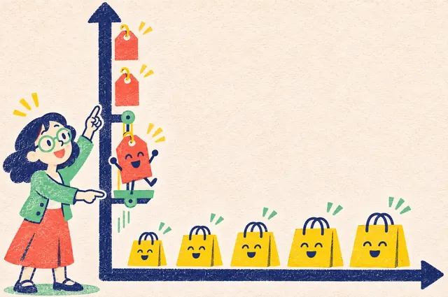
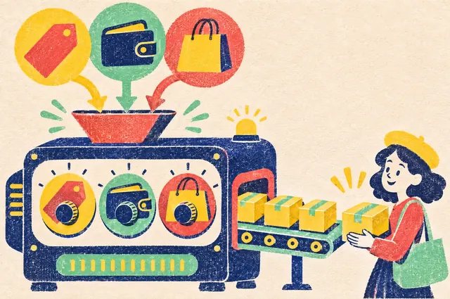
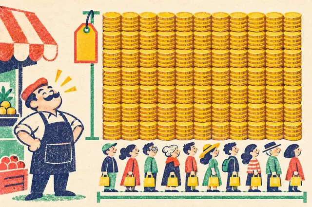

הקו היורד
במחיר גבוה קונים מעט, ובמחיר נמוך קונים הרבה. למה?
מה זה ביקוש, ואיך קוראים את הגרף
האזנה לנושא (1:35)
תמליל
- כל נקודה על עקומת הביקוש עונה על שאלה אחת: במחיר הזה, כמה יקנו?
- בואו נכיר את בית הקפה של נועה, ליד הקמפוס.
- כוס קפה עולה אצלה 10 ₪, והיא מוכרת 100 כוסות ביום.
- נועה שואלת את עצמה: אם אעלה את המחיר, כמה כוסות אמכור?
- וכמה כסף ייכנס לקופה?
- כל השיעור עונה על שתי השאלות האלה, עם אותו בית קפה.
- ביקוש הוא רשימה של תשובות לשאלה אחת: במחיר הזה, כמה תקנו?
- כמות מבוקשת היא תשובה אחת מהרשימה: כמה קונים במחיר אחד מסוים.
- אצל נועה, במחיר 10 ₪ קונים 100 כוסות.
- במחיר 12 ₪ קונים 80 כוסות.
- ובמחיר 8 ₪ קונים 120 כוסות.
- בגרף, המחיר נמצא על הציר העומד, ומסמנים אותו באות P.
- הכמות נמצאת על הציר השוכב, ומסמנים אותה באות Q.
- הקו של נועה יורד: ככל שהמחיר זול יותר, קונים יותר כוסות.
- הקו פוגש את ציר המחיר ב־20 ₪, ובמחיר הזה אף אחד לא קונה.
- הוא פוגש את ציר הכמות ב־200 כוסות: זה מה שהיו לוקחים אילו הקפה היה בחינם.
- בקיצור: ביקוש הוא כל הקו, וכמות מבוקשת היא נקודה אחת עליו.
הכללכל נקודה על עקומת הביקוש עונה על שאלה אחת: במחיר הזה, כמה יקנו? המחיר (P) על הציר העומד, והכמות (Q) על הציר השוכב.
בית הקפה של נועה נמצא ליד הקמפוס. כוס קפה עולה אצלה 10 ₪, והיא מוכרת 100 כוסות ביום. נועה שואלת את עצמה שתי שאלות: אם אעלה את המחיר, כמה כוסות אמכור? וכמה כסף ייכנס לקופה? כל השיעור עונה על שתי השאלות האלה, צעד אחרי צעד, עם אותו בית קפה.
ביקוש (Demand, מסמנים D) הוא רשימה של תשובות לשאלה אחת: ״במחיר הזה, כמה תקנו?״. כמות מבוקשת (מסמנים Q) היא תשובה אחת מהרשימה: כמה קונים במחיר אחד מסוים.
אצל נועה: במחיר 10 ₪ קונים 100 כוסות. במחיר 12 ₪ קונים 80 כוסות. במחיר 8 ₪ קונים 120 כוסות.
כל שורה כזאת היא כמות מבוקשת. כל הרשימה ביחד היא הביקוש.
איך קוראים את הגרף

כל נקודה על הקו עונה על שאלה אחת: ״במחיר הזה, כמה כוסות יקנו?״. בכלכלה קוראים לקו הזה עקומת ביקוש, גם כשהוא ישר לגמרי. הקו של נועה יורד: ככל שהולכים ימינה (יותר כוסות), הוא נמוך יותר (מחיר זול יותר).
הקו פוגש את ציר המחיר ב־20 ₪: במחיר הזה אף אחד לא קונה. הוא פוגש את ציר הכמות ב־200 כוסות: זה מה שהיו לוקחים אילו הקפה היה בחינם. את הנוסחה של הקו נכתוב בפרק ב׳.
הנושא הבא · נושא 2כל כוס נוספת שווה פחותכל כוס נוספת שווה פחות
האזנה לנושא (1:40)
תמליל
- כל יחידה נוספת שווה לנו פחות מהקודמת.
- לכן נקנה עוד יחידה רק אם המחיר יורד, וזו הסיבה שהקו יורד.
- קחו את דנה, סטודנטית: הכוס הראשונה בבוקר שווה לה 18 ₪.
- השנייה שווה לה 12 ₪.
- השלישית 6 ₪, והרביעית רק 2.
- כי אחרי כוס אחת היא כבר ערה, וכל כוס נוספת נותנת לה פחות.
- לזה קוראים תועלת שולית פוחתת.
- תועלת היא כמה טוב המוצר עושה לי.
- המילה שולית אומרת: של היחידה הנוספת, זאת שעוד לא קיבלתי.
- והמילה פוחתת אומרת: הולכת וקטנה.
- המחיר הכי גבוה שדנה מוכנה לשלם על עוד כוס נקרא נכונות לשלם.
- במחיר 15 ₪ דנה קונה כוס אחת, כי רק הראשונה שווה לה יותר מהמחיר.
- במחיר 10 ₪ היא קונה שתי כוסות.
- ובמחיר 5 ₪ היא קונה שלוש כוסות.
- לזה קוראים חוק הביקוש: המחיר עולה, והכמות המבוקשת יורדת.
- שימו לב: התועלת הכוללת של דנה עדיין גדלה עם כל כוס.
- רק התוספת של כל כוס, התועלת השולית, קטנה.
- בקיצור: כל כוס נוספת שווה פחות, ולכן קונים יותר רק כשהמחיר יורד.
הכללכל יחידה נוספת שווה לנו פחות מהקודמת. לכן נקנה עוד יחידה רק אם המחיר יורד, והקו יורד.
דנה סטודנטית. הכוס הראשונה בבוקר שווה לה 18 ₪. השנייה שווה לה 12 ₪. השלישית 6 ₪. הרביעית רק 2 ₪. למה? כי אחרי כוס אחת היא כבר ערה, וכל כוס נוספת נותנת לה פחות.
לזה קוראים תועלת שולית פוחתת.
- תועלת = כמה טוב המוצר עושה לי.
- שולית = של היחידה הנוספת, זאת שעוד לא קיבלתי.
- פוחתת = הולכת וקטנה.
המחיר הכי גבוה שדנה מוכנה לשלם על עוד כוס נקרא נכונות לשלם.
עכשיו נשאל כמה כוסות דנה תקנה. במחיר 15 ₪ היא קונה כוס אחת: רק הראשונה שווה לה יותר מ־15 ₪. במחיר 10 ₪ היא קונה שתי כוסות. במחיר 5 ₪ היא קונה שלוש כוסות. מחיר נמוך יותר, ולכן כמות גדולה יותר. זה הקו היורד, ובכלכלה קוראים לו חוק הביקוש: המחיר עולה, והכמות המבוקשת יורדת.
נסו: לחצו שוב ושוב על ״עוד בקבוק״, ואז הזיזו את המחיר: כמה בקבוקים הוא יקנה?
בקבוק 6: שווה לו 0. המדרגות שנוצרו הן עקומת ביקוש: המחיר למעלה, הכמות לרוחב.
במחיר 30 ₪ הוא קונה 3 בקבוקים: כל בקבוק שהוא מוכן לשלם עליו לפחות 30 ₪. הורידו את המחיר, והכמות תגדל.
הניסוי צריך JavaScript. במילים: המטייל מוכן לשלם 100, 60, 30, 12, 4 ו־0 ₪ על בקבוקים 1 עד 6. במחיר 30 ₪ הוא קונה 3 בקבוקים, ובמחיר 12 ₪ הוא קונה 4.
התועלת הכוללת של דנה עדיין גדלה עם כל כוס. רק התוספת של כל כוס, התועלת השולית, קטנה.
שתי השפעות: תחלופה והכנסה
האזנה לנושא (1:36)
תמליל
- כשהמחיר של מוצר יורד, הוא נעשה זול יותר ביחס למוצרים אחרים: זו השפעת התחלופה.
- וגם אותו כסף קונה יותר: זו השפעת ההכנסה.
- במוצר רגיל, שתי ההשפעות דוחפות לקנות יותר.
- נניח שמחיר הקפה ירד מ־12 ₪ ל־8 ₪.
- לדנה יש 96 ₪ לשבוע לשתייה.
- הקפה נעשה זול יותר ביחס לתה, ולכן דנה מחליפה חלק מהתה בקפה.
- ועם אותו תקציב, היא יכולה לקנות עכשיו 12 כוסות במקום 8.
- כוח הקנייה שלה עלה, וזו השפעת ההכנסה.
- לכוח הקנייה קוראים הכנסה ריאלית.
- המשכורת בשקלים, כמו שהיא כתובה בתלוש, נקראת הכנסה נומינלית.
- כשהמחיר יורד, ההכנסה הנומינלית לא זזה, אבל ההכנסה הריאלית עולה.
- יש חריג נדיר שבו הקו עולה: מוצר גיפן.
- משפחה ענייה מאוד מוציאה את רוב הכסף על לחם.
- מחיר הלחם עלה, ועכשיו אין לה כסף לבשר, אז היא קונה עוד לחם.
- במקרה הזה, השפעת ההכנסה חזקה מהשפעת התחלופה, ומושכת לכיוון ההפוך.
- בקיצור: שתי ההשפעות מסבירות למה הקו יורד, ורק במוצר גיפן הנדיר הוא עולה.
הכללכשהמחיר של מוצר יורד, קורים שני דברים: הוא נעשה זול יותר ביחס למוצרים אחרים (השפעת התחלופה), ואותו כסף קונה יותר (השפעת ההכנסה). במוצר רגיל שתיהן דוחפות לקנות יותר.
במחברת יש לקו היורד שתי סיבות. שתיהן קורות רק כשהמחיר של המוצר עצמו משתנה. נניח שמחיר הקפה ירד מ־12 ₪ ל־8 ₪, ולדנה יש 96 ₪ לשבוע לשתייה.
הקפה נעשה זול יותר ביחס לתה. לכן דנה מחליפה חלק מהתה בקפה.
עם אותם 96 ₪ היא יכולה לקנות עכשיו 12 כוסות במקום 8. היא ״מרגישה עשירה יותר״: כוח הקנייה שלה עלה.
כוח הקנייה נקרא הכנסה ריאלית. המשכורת בשקלים, כמו שהיא כתובה בתלוש, נקראת הכנסה נומינלית. כשהמחיר יורד, ההכנסה הנומינלית לא זזה, אבל ההכנסה הריאלית עולה.
נסו: בחרו סוג מוצר, וראו לאן דוחפת כל השפעה כשהמחיר יורד מ־12 ל־8 ₪.
מוצר נורמלי. שתי ההשפעות דוחפות לאותו כיוון: המחיר ירד, וקונים יותר. דנה עוברת מ־8 ל־12 כוסות.
המספרים להמחשה. השפעת התחלופה תמיד דוחפת לקנות יותר כשהמחיר יורד.
הניסוי צריך JavaScript. הטבלה שלמטה מסכמת את שלושת המקרים.
מוצר גיפן: החריג הנדיר
יש מקרה נדיר שבו הקו עולה. קוראים לו מוצר גיפן (Giffen good). משפחה ענייה מאוד מוציאה את רוב הכסף על לחם. מחיר הלחם עלה, ועכשיו אין לה כסף לבשר בכלל. כדי לשבוע, היא קונה עוד לחם. כאן השפעת ההכנסה חזקה מהשפעת התחלופה, והיא מושכת לכיוון ההפוך.
| המוצר | תחלופה | הכנסה | ביחד |
|---|---|---|---|
| נורמלי | יותר | יותר | יותר |
| נחות | יותר | פחות | בדרך כלל יותר |
| גיפן (נדיר) | יותר | פחות, וחזק יותר | פחות |
במבחן: אם לא כתוב ״גיפן״, הקו יורד.
״למה העקומה יורדת?״: בגלל השפעת התחלופה (המוצר נעשה זול יחסית) והשפעת ההכנסה (ההכנסה הריאלית עולה). בבסיס: תועלת שולית פוחתת.
המחיר של המוצר עצמו השתנה: זזים על הקו
האזנה לנושא (1:11)
תמליל
- כשהמחיר של המוצר עצמו משתנה, זזים על הקו.
- משתנה רק הכמות המבוקשת, והקו עצמו לא זז.
- מחיר הקפה של נועה עלה מ־10 ₪ ל־12 ₪.
- הכמות ירדה מ־100 כוסות ל־80.
- האם הקו זז? לא.
- הנקודה טיפסה על אותו קו: למעלה, כי יקר יותר, ושמאלה, כי פחות כוסות.
- לזה קוראים שינוי בכמות המבוקשת.
- במחברת, המחיר והכמות נקראים משתנים אנדוגניים, כלומר ״מבפנים״.
- אלה המשתנים שנמצאים על הצירים של הגרף.
- כשאחד מהם משתנה, זזים על הקו.
- במבחן כותבים כך: המחיר של המוצר עצמו השתנה, ולכן זו תנועה לאורך עקומת הביקוש.
- הכמות המבוקשת ירדה מ־100 ל־80, והעקומה עצמה לא זזה.
- בקיצור: כשמשתנה המחיר של המוצר עצמו, זזים על הקו, והקו נשאר במקום.
הכללכשמחיר המוצר עצמו משתנה, זזים על הקו, ומשתנה רק הכמות המבוקשת. הקו עצמו לא זז.
מחיר הקפה של נועה עלה מ־10 ₪ ל־12 ₪, והכמות ירדה מ־100 ל־80 כוסות. האם הקו זז? לא. הנקודה טיפסה על אותו קו: למעלה (יקר יותר) ושמאלה (פחות כוסות). לזה קוראים שינוי בכמות המבוקשת.
במחברת המחיר והכמות נקראים משתנים אנדוגניים (״מבפנים״): משתנים שנמצאים על הצירים של הגרף, P או Q. כשאחד מהם משתנה, זזים על הקו.
״המחיר של המוצר עצמו השתנה. לכן זו תנועה לאורך עקומת הביקוש, מנקודה A לנקודה B. הכמות המבוקשת ירדה מ־100 ל־80. העקומה עצמה לא זזה.״
מה מזיז את כל הקו?
המחיר של הקפה לא השתנה, ובכל זאת קונים יותר. מה קרה?
על הקו, או הקו כולו?
האזנה לנושא (1:35)
תמליל
- כל דבר שהוא לא המחיר של המוצר עצמו מזיז את כל הקו.
- הקו זז ימינה כשבכל מחיר רוצים יותר.
- והוא זז שמאלה כשבכל מחיר רוצים פחות.
- לפני כל שאלה בפרק הזה, שאלו את עצמכם: האם המחיר של המוצר עצמו השתנה?
- אם כן, זזים על הקו: משתנה הכמות המבוקשת, והקו נשאר במקום.
- אם לא, הקו כולו זז: משתנה הביקוש.
- באותו מחיר קונים כמות אחרת, ולכן כל הקו זז ימינה או שמאלה.
- במחברת, הדברים שמזיזים את הקו נקראים משתנים אקסוגניים, כלומר ״מבחוץ״.
- הם לא נמצאים על הצירים.
- יש שלושה כאלה: ההכנסה I, המחיר של מוצר אחר Py והטעמים T.
- אצל נועה, ארבעה דברים מזיזים את הקו, בלי לגעת במחיר הקפה.
- משכורת חדשה, דוכן תה ממול, מאפים ליד הקפה ועוד סטודנטים בקמפוס.
- זהירות מהמשפט: ״מחיר הקפה עלה, ולכן הביקוש לקפה ירד״.
- זה לא נכון: המחיר של הקפה עצמו השתנה, ולכן ירדה הכמות המבוקשת.
- הביקוש, כלומר הקו, לא זז.
- בקיצור: המחיר של המוצר עצמו מזיז אותנו על הקו, וכל דבר אחר מזיז את הקו כולו.
הכללכל דבר שהוא לא המחיר של המוצר עצמו מזיז את כל הקו. ימינה = בכל מחיר רוצים יותר. שמאלה = בכל מחיר רוצים פחות.
לפני כל שאלה בפרק הזה, שאלו שאלה אחת: האם המחיר של המוצר עצמו השתנה?
משתנה הכמות המבוקשת. הקו נשאר במקום. (נושא 4)
משתנה הביקוש. באותו מחיר קונים כמות אחרת, ולכן כל הקו זז ימינה או שמאלה.
במחברת, הדברים שמזיזים את הקו נקראים משתנים אקסוגניים (״מבחוץ״). הם לא נמצאים על הצירים. יש שלושה כאלה: ההכנסה I, המחיר של מוצר אחר Py, והטעמים T.
״מחיר הקפה עלה, ולכן הביקוש לקפה ירד״: לא נכון. המחיר של הקפה עצמו השתנה, ולכן ירדה הכמות המבוקשת. הביקוש (הקו) לא זז.
הכנסה: נורמלי, נחות, ניטרלי
האזנה לנושא (1:37)
תמליל
- כשההכנסה עולה והקו זז ימינה, המוצר נורמלי.
- כשהקו זז שמאלה, המוצר נחות.
- וכשהקו לא זז בכלל, המוצר ניטרלי.
- שימו לב: זו ההכנסה של הקונה (I), ולא של נועה.
- הכסף שנכנס לנועה נקרא ״פדיון״, ונלמד עליו בפרק ד׳.
- הסטודנטים קיבלו מלגה, וההכנסה שלהם עלתה.
- באותו מחיר, 10 ₪, קונים עכשיו אצל נועה 120 כוסות במקום 100.
- הקו זז ימינה, ולכן הקפה של נועה הוא מוצר נורמלי.
- משה שותה קפה מהמכונה האוטומטית בפקולטה.
- כשיש לו יותר כסף, הוא עובר לנועה, ולכן הקפה מהמכונה נחות בשבילו.
- ״נחות״ לא אומר ״גרוע״, אלא רק שעוזבים אותו כשיש יותר כסף.
- וניטרלי, למשל משחת שיניים: מי שמרוויח פי 2 לא מצחצח שיניים פי 2.
- עקומת אנגל מראה מה קורה לכמות כשרק ההכנסה משתנה, והמחיר קבוע.
- בגרף שלה ההכנסה I על הציר העומד, והכמות Q על הציר השוכב.
- כשההכנסה עולה, דנה קונה יותר, משה קונה פחות והכמות של משחת השיניים לא משתנה.
- בקיצור: כשההכנסה עולה, הכיוון שאליו הקו זז אומר אם המוצר נורמלי, נחות או ניטרלי.
הכללההכנסה עלתה והקו זז ימינה: מוצר נורמלי. זז שמאלה: נחות. לא זז בכלל: ניטרלי.
I מסמנת את ההכנסה של הקונה (Income). זו לא ההכנסה של נועה: את הכסף שנכנס לנועה נקרא בפרק ד׳ ״פדיון״.
| המוצר | הכמות בכל מחיר | הקו |
|---|---|---|
| נורמלי | קונים יותר | זז ימינה |
| נחות | קונים פחות | זז שמאלה |
| ניטרלי | לא משתנה | לא זז |
נורמלי: הקפה של נועה, ורוב המוצרים. נחות: משה שותה קפה מהמכונה האוטומטית בפקולטה. כשיש לו יותר כסף, הוא עובר לבית הקפה של נועה. ״נחות״ לא אומר ״גרוע״, רק ״עוזבים אותו כשיש יותר כסף״. ניטרלי: משחת שיניים ומלח. מי שמרוויח פי שניים לא מצחצח שיניים פי שניים.
חשוב: הסוג תלוי בקונה ובהכנסה שלו. מרגרינה יכולה להיות נורמלית בהכנסה נמוכה, ניטרלית בהכנסה בינונית, ונחותה בהכנסה גבוהה (עוברים לחמאה).
עקומת אנגל
עקומת אנגל (Engel curve) מראה מה קורה לכמות כשרק ההכנסה משתנה, והמחיר קבוע. עקומת הביקוש עונה על ״מה קורה כשהמחיר משתנה״. עקומת אנגל עונה על ״מה קורה כשההכנסה משתנה״. בגרף של אנגל ההכנסה I על הציר העומד, והכמות Q על הציר השוכב.
| הכנסה I | דנה | משה | משחה |
|---|---|---|---|
| 2 | 3 | 6 | 1 |
| 4 | 5 | 4 | 1 |
| 6 | 7 | 2 | 1 |
טעמים והעדפות
האזנה לנושא (0:59)
תמליל
- כשהטעמים משתנים, באותו מחיר בדיוק רוצים כמות אחרת, ולכן הקו כולו זז.
- פרסומת, אופנה והמלצה של חבר, כולם נחשבים טעמים.
- במחברת מסמנים אותם באות T.
- מחקר חדש אמר שקפה טוב לריכוז.
- באותו מחיר, 10 ₪, רוצים עכשיו יותר קפה, והקו של נועה זז ימינה.
- אילו המחקר היה אומר שקפה מזיק, הקו היה זז שמאלה.
- ועוד דבר מזיז את הקו של כל בית הקפה: מספר הקונים.
- כשמגיעים לקמפוס עוד סטודנטים, בכל מחיר נמכרות יותר כוסות.
- על זה נדבר בפרק ה׳, ביקוש מצרפי.
- בקיצור: אוהבים את המוצר יותר, הקו זז ימינה, ואוהבים אותו פחות, הקו זז שמאלה.
הכללכשהטעמים משתנים, באותו מחיר בדיוק רוצים כמות אחרת, ולכן הקו כולו זז.
מחקר חדש אמר שקפה טוב לריכוז. באותו מחיר, 10 ₪, רוצים עכשיו יותר קפה. הקו של נועה זז ימינה. אילו המחקר היה אומר שקפה מזיק, הקו היה זז שמאלה.
ועוד דבר שמזיז את הקו של כל בית הקפה: מספר הקונים. כשמגיעים לקמפוס עוד סטודנטים, בכל מחיר נמכרות יותר כוסות. על זה בפרק ה׳, ביקוש מצרפי.
הנושא הבא · נושא 9פונקציית הביקושפונקציית הביקוש
האזנה לנושא (1:57)
תמליל
- בפונקציית ביקוש מסתכלים על הסימן שלפני כל אות.
- לפני ההכנסה I: פלוס פירושו נורמלי, מינוס פירושו נחות, ואם היא חסרה, ניטרלי.
- לפני מחיר של מוצר אחר Py: פלוס פירושו תחליפיים, מינוס משלימים, ואם הוא חסר, בלתי תלויים.
- פונקציית ביקוש היא נוסחה: מכניסים לה מחירים והכנסה, והיא אומרת כמה כוסות יקנו.
- בנוסחה של נועה, Qx = 120 − 10Px + 10I + 5Pt − 5Pc, הכמות מתחילה מ־120.
- מורידים 10 כוסות על כל שקל במחיר הקפה.
- ומוסיפים 10 כוסות על כל אלף ₪ בהכנסה החודשית של הסטודנטים.
- מוסיפים 5 כוסות על כל שקל במחיר התה, ומורידים 5 על כל שקל במחיר העוגייה.
- לפני ההכנסה יש פלוס, ולכן הקפה נורמלי.
- לפני מחיר התה יש פלוס, ולכן קפה ותה תחליפיים.
- לפני מחיר העוגייה יש מינוס, ולכן קפה ועוגייה משלימים.
- עכשיו מציבים הכנסה של 6 אלפים, תה ב־10 ₪ ועוגייה ב־6 ₪.
- ומקבלים את הקו של נועה: Qx = 200 − 10Px.
- אם ההכנסה עולה ל־8 אלפים, ה־200 הופכים ל־220: Qx = 220 − 10Px.
- בכל מחיר קונים 20 כוסות יותר, והקו זז ימינה.
- ואם במקום זה העוגייה מתייקרת ל־10 ₪, ה־200 הופכים ל־180: Qx = 180 − 10Px.
- בכל מחיר קונים 20 כוסות פחות, והקו זז שמאלה.
- בקיצור: הסימן לפני כל אות בנוסחה אומר לכם את סוג המוצר.
הכללבפונקציית ביקוש מסתכלים על הסימן לפני כל אות. לפני I: פלוס = נורמלי, מינוס = נחות, אין I = ניטרלי. לפני Py: פלוס = תחליפיים, מינוס = משלימים, אין Py = בלתי תלויים.

זו הנוסחה של בית הקפה של נועה:
Qx = 120 − 10Px + 10I + 5Pt − 5Pc
Px = מחיר הקפה. I = הכנסת הסטודנטים (באלפי ₪ בחודש). Pt = מחיר התה. Pc = מחיר העוגייה. מספר שצמוד לאות פירושו ״כפול״: 10I = 10 כפול ההכנסה.
מה אומר כל סימן?
- −10Pxמינוס, כמו שציפינו: כל שקל שהקפה מתייקר, נמכרות 10 כוסות פחות. זו תנועה על הקו.
- +10Iפלוס, ולכן הקפה נורמלי. מינוס היה אומר נחות. אם אין I בכלל, המוצר ניטרלי.
- +5Ptפלוס, ולכן קפה ותה תחליפיים.
- −5Pcמינוס, ולכן קפה ועוגייה משלימים. אם אין Py בנוסחה, המוצרים בלתי תלויים.
- 120כל מה שלא כתוב בנוסחה, למשל הטעמים, ״מתחבא״ במספר הזה.
דוגמה פתורה: מהנוסחה אל הקו, ואז מזיזים
- מציבים את הנתונים הקבועים: I = 6, Pt = 10, Pc = 6.
Qx = 120 − 10Px + 60 + 50 − 30 = 200 − 10Px
זה הקו של נועה. במחיר 10 ₪: 200 − 100 = 100 כוסות. - ההכנסה עלתה ל־8. מציבים שוב:
Qx = 120 − 10Px + 80 + 50 − 30 = 220 − 10Px
במחיר 10 ₪: 120 כוסות. בכל מחיר נמכרות 20 כוסות יותר. הקו זז ימינה. הקפה נורמלי. - במקום זה, העוגייה התייקרה ל־10 ₪:
Qx = 120 − 10Px + 60 + 50 − 50 = 180 − 10Px
במחיר 10 ₪: 80 כוסות. הקו זז שמאלה. קפה ועוגייה משלימים.
נסו: הזיזו רק את מחיר התה וראו את כל הקו זז, ואז הזיזו את מחיר הקפה וראו שרק הנקודה זזה.
Qx = 120 − 10Px + 10·6 + 5·10 − 5·6 = 200 − 10Px
במחיר 10 ₪: 200 − 100 = 100 כוסות.
בהכנסה 4 (אלפי ₪): דנה שותה 5 כוסות, משה 4, ומשחת השיניים נשארת 1. הזיזו את ההכנסה: אצל דנה הכמות עולה, אצל משה היא יורדת, ומשחת השיניים לא זזה.
הניסוי צריך JavaScript. את אותו רעיון רואים בדוגמה הפתורה ובגרף שמעל הניסוי.
״מציבים את הנתונים ומקבלים Qx = 200 − 10Px. ההכנסה עלתה, ולכן עקומת הביקוש זזה ימינה ל־Qx = 220 − 10Px: בכל מחיר הכמות גדלה ב־20. זה שינוי בביקוש, כי השתנה גורם אקסוגני. הקפה הוא מוצר נורמלי, כי המקדם של I חיובי.״
וכשנותנים טבלה עם כמה הכנסות (כמו הגרביים בתרגיל 3): כל עמודה (הכנסה קבועה) היא עקומת ביקוש אחת. קוראים שורה (מחיר קבוע) כדי לדעת אם המוצר נורמלי.
ניסוח הפוך: מחיר לפי כמות
לפעמים הנוסחה כתובה הפוך, כמחיר לפי כמות: P = 20 − 0.1Q. זה אותו קו בדיוק. המספר הבודד, 20, הוא המחיר שבו אף אחד לא קונה.
כדי לחזור לכמות לפי מחיר, מבודדים את Q: 0.1Q = 20 − P, ולכן Q = 200 − 10P. במחיר 15 ₪: Q = 200 − 150 = 50 כוסות.
ניסוי: הקו או הנקודה?
האזנה לנושא (1:06)
תמליל
- לפני כל אירוע שאלו: האם המחיר של המוצר עצמו השתנה?
- אם כן, זזים על הקו.
- אם לא, הקו כולו זז, או לא זז בכלל.
- הנה כמה אירועים מהניסוי, עם התשובות.
- מחיר הקפה עלה: זזים על הקו.
- ההכנסה עלתה, והקפה של נועה נורמלי: הקו זז ימינה.
- ההכנסה עלתה, והקפה מהמכונה נחות: הקו זז שמאלה.
- ההכנסה עלתה, ומשחת השיניים ניטרלית: הקו לא זז.
- התה התייקר: הקו של הקפה זז ימינה.
- העוגייה התייקרה: הקו של הקפה זז שמאלה.
- העכבר למחשב התייקר: הקו של הקפה לא זז.
- ומחקר אומר שקפה בריא: הקו זז ימינה.
- בקיצור: רק מחיר הקפה עצמו מזיז אותנו על הקו, וכל השאר מזיז את הקו כולו, או לא משפיע.
הכלללפני כל אירוע שאלו: האם המחיר של המוצר עצמו השתנה? אם כן, זזים על הקו. אם לא, הקו כולו זז, או לא זז בכלל.
נסו: בחרו אירוע, נחשו מה יקרה בגרף, ורק אז בדקו.
הניסוי צריך JavaScript. התשובות: מחיר הקפה עלה: זזים על הקו. הכנסה עלתה (קפה של נועה): ימינה. הכנסה עלתה (קפה מהמכונה, נחות): שמאלה. הכנסה עלתה (משחת שיניים): לא זז. התה התייקר: ימינה. העוגייה התייקרה: שמאלה. העכבר התייקר: לא זז. מחקר אומר שקפה בריא: ימינה.
גמישות: בכמה?
המחיר עלה ב־10%. בכמה אחוזים תרד הכמות?
מה זה גמישות, ואיך מחשבים אותה
האזנה לנושא (1:58)
תמליל
- הגמישות, שמסמנים אותה באות η, שווה לאחוז השינוי בכמות, חלקי אחוז השינוי במחיר.
- מחלקים תמיד במה שהיה לפני, ומשווים את הערך המוחלט שלה ל־1.
- בפרק א׳ ראינו שהכמות יורדת כשהמחיר עולה, ועכשיו נועה רוצה לדעת בכמה.
- אם הלקוחות כמעט לא יגיבו, העלאת מחיר תכניס לה יותר כסף.
- ואם הם יברחו, ייכנס לה פחות כסף.
- ביקוש גמיש הוא כמו גומייה: נוגעים קצת במחיר, והכמות נמתחת הרבה.
- ביקוש קשיח הוא כמו מוט פלדה: מושכים חזק במחיר, והכמות כמעט לא זזה.
- אחוז שינוי מחשבים כך: אחרי פחות לפני, חלקי לפני, כפול 100.
- אצל נועה, המחיר עלה מ־10 ₪ ל־11, כלומר ב־10%.
- הכמות ירדה מ־100 כוסות ל־90, כלומר ב־10%.
- מחלקים −10% ב־10%, ומקבלים η = −1.
- הכמות זזה באותו אחוז כמו המחיר, ולזה קוראים גמישות יחידתית.
- הגמישות יוצאת שלילית, כי המחיר והכמות זזים בכיוונים הפוכים.
- במבחן כותבים אותה עם המינוס, ומסווגים לפי הערך המוחלט |η|, בלי המינוס.
- וזהירות, הכיוון משנה: מ־10 ₪ ל־11, הגמישות יוצאת −1.
- אבל מ־11 ₪ ל־10, היא יוצאת בערך −1.22.
- בקיצור: גמישות היא אחוזים חלקי אחוזים, מחלקים במה שהיה לפני, ומסווגים בערך מוחלט.
הכללη = אחוז השינוי בכמות חלקי אחוז השינוי במחיר. מחלקים תמיד במה שהיה לפני, ומשווים את הערך המוחלט ל־1.
בפרק א׳ ראינו לאיזה כיוון הכמות זזה כשהמחיר עולה: למטה. עכשיו נועה רוצה לדעת בכמה. אם הלקוחות כמעט לא יגיבו, העלאת מחיר תכניס לה יותר כסף. אם הם יברחו, פחות. המספר שמודד ״בכמה״ נקרא גמישות.
תזכורת: איך מחשבים אחוז שינוי
- כמה השתנה? אחרי פחות לפני.
- מחלקים במה שהיה לפני.
- כופלים ב־100.
המחיר של נועה עלה מ־10 ₪ ל־11 ₪: (11 − 10) : 10 = 0.1, כלומר +10%. הכמות ירדה מ־100 ל־90 כוסות: (90 − 100) : 100 = −0.1, כלומר −10%. מינוס פירושו שמשהו ירד.
10 מתוך 100 = 10%. 10 כוסות מתוך 100 הן בדיוק 10% מהכמות.
הנוסחה
גמישות מסמנים באות היוונית η (״אֵטָה״. במחברת היא נראית כמו n).
η = %ΔQ / %ΔP
η = [(Q1 − Q0) / Q0] / [(P1 − P0) / P0]
Δ (״דלתא״) = ״השינוי״. המספר הקטן 0 = לפני, והמספר הקטן 1 = אחרי. הכמות למעלה, המחיר למטה. בעברית פשוטה: ״המחיר זז ב־1%. בכמה אחוזים זזה הכמות?״
למה באחוזים? כי שקל אחד על כוס קפה זה הרבה, ושקל אחד על מחשב זה כלום. אחוזים מאפשרים להשוות.
הסימן: כותבים עם מינוס, משווים בלי
המחיר עולה (פלוס), והכמות יורדת (מינוס). מינוס חלקי פלוס נותן מינוס. לכן הגמישות של ביקוש רגיל תמיד שלילית (חוץ ממוצר גיפן). במבחן כותבים את התוצאה עם המינוס: η = −1.5. כדי לסווג, מסתכלים על הערך בלי המינוס. לזה קוראים ערך מוחלט, ומסמנים אותו בשני קווים עומדים: |−1.5| = 1.5.
מחלקים במה שהיה לפני. לכן הכיוון משנה: מ־10 ל־11 ₪ (100 ל־90 כוסות) יוצא η = −1, אבל מ־11 ל־10 ₪ (90 ל־100 כוסות) יוצא η = −1.22. קראו בשאלה מה היה לפני.
דוגמה פתורה: בית הקפה של נועה
- לפני: 10 ₪, 100 כוסות. אחרי: 11 ₪, 90 כוסות.
- אחוז השינוי בכמות: (90 − 100) : 100 = −10%.
- אחוז השינוי במחיר: (11 − 10) : 10 = +10%.
- η = −10% : 10% = −1. בערך מוחלט: 1.
- הכמות זזה באותו אחוז כמו המחיר. לזה קוראים גמישות יחידתית.
ועכשיו נקודה אחרת על אותו קו: לפני 12 ₪ ו־80 כוסות, אחרי 13 ₪ ו־70 כוסות.
%ΔQ = −10 : 80 = −12.5%
%ΔP = 1 : 12 = +8.33%
η = −12.5 : 8.33 = −1.5
אותו קו, ויצאה גמישות אחרת. על זה בפרק ד׳.
%ΔQ = (90 − 100) : 100 = −10%
%ΔP = (11 − 10) : 10 = 10%
η = −10% : 10% = −1
|η| = 1, ולכן גמישות יחידתית.
תמיד: נוסחה, הצבה, תוצאה עם סימן, ערך מוחלט, ומילה אחת (גמיש, קשיח או יחידתי).
שלושה מקרים ושני קצוות
האזנה לנושא (1:45)
תמליל
- אחרי שחישבנו את η, מסתכלים על הערך המוחלט שלה, |η|.
- אם |η| יותר מ־1, הביקוש גמיש.
- אם |η| בדיוק 1, הביקוש יחידתי.
- אם |η| פחות מ־1, הביקוש קשיח.
- גמיש פירושו שהמחיר עלה ב־1%, והכמות ירדה ביותר מ־1%.
- קשיח פירושו שהכמות ירדה בפחות מ־1%.
- אצל נועה, במחיר 12 ₪, |η| = 1.5, ולכן הביקוש גמיש.
- קצה אחד: חולה סוכרת צריך 5 מנות אינסולין, בכל מחיר.
- הכמות לא זזה בכלל: η = 0, הקו עומד, והביקוש קשיח לחלוטין.
- הקצה השני: שישה דוכנים מוכרים בדיוק אותה לימונדה, ב־5 ₪.
- דוכן אחד מעלה מחיר באגורה, וכל הקונים עוברים לשכנים.
- במקרה הזה η = ∞, הקו שוכב, והביקוש גמיש לחלוטין.
- ועוד מקרה: יואב מוציא על קפה בדיוק 60 ₪ בשבוע, בכל מחיר.
- במחיר 10 ₪ הוא קונה 6 כוסות.
- ובמחיר 20 ₪, רק 3 כוסות.
- אצלו הגמישות יחידתית בכל נקודה, והקו מעוגל: היפרבולה.
- בקיצור: בערך מוחלט, מעל 1 גמיש, 1 יחידתי, מתחת ל־1 קשיח, ושני הקצוות הם 0 ו־∞.
הכללמסתכלים על |η|: יותר מ־1 = גמיש. בדיוק 1 = יחידתי. פחות מ־1 = קשיח. קו אנכי = 0, קו אופקי = אינסוף.
אחרי שחישבנו את η, שואלים שאלה אחת: האם |η| גדול מ־1, שווה ל־1, או קטן מ־1?
| |η| והשם | מה זה אומר | דוגמה |
|---|---|---|
| |η| > 1 גמיש | המחיר עלה ב־1%, והכמות ירדה ביותר מ־1% | אצל נועה במחיר 12 ₪: |η| = 1.5 |
| |η| = 1 יחידתי | הכמות זזה באותו אחוז כמו המחיר | אצל נועה במחיר 10 ₪ |
| |η| < 1 קשיח | המחיר עלה ב־1%, והכמות ירדה בפחות מ־1% | אצל נועה במחיר 8 ₪: |η| = 0.67 |
| η = 0 קשיח לחלוטין | אותה כמות בכל מחיר. קו אנכי (עומד) | אינסולין |
| η = ∞ גמיש לחלוטין | קונים רק במחיר אחד. קו אופקי (שוכב) | דוכני לימונדה |
הקצוות
טריק לזכור: אנכי = אפס תגובה. אופקי = אינסוף תגובה.
גמישות יחידתית: למה הקו מעוגל
יואב מחליט: ״כל שבוע אני מוציא על קפה בדיוק 60 ₪. לא פחות ולא יותר.״ בכל מחיר P · Q = 60, וכל המלבנים מתחת לקו באותו שטח. המחיר עולה באחוז מסוים, והכמות יורדת בערך באותו אחוז. זו גמישות יחידתית בכל נקודה.
| א | ב | ג | ד | ה | |
|---|---|---|---|---|---|
| מחיר P | 6 | 10 | 12 | 15 | 20 |
| כוסות Q | 10 | 6 | 5 | 4 | 3 |
| P · Q | 60 | 60 | 60 | 60 | 60 |
הקו שמתקבל מעוגל. במתמטיקה קוראים לו היפרבולה.
נסו: לחצו ״הפוך כיוון״ וראו למה η משתנה.
גמישות יחידתיתη = −1 · |η| = 1
איך חישבנו
- אחוז השינוי בכמות: (90 − 100) : 100 = −10%
- אחוז השינוי במחיר: (11 − 10) : 10 = 10%
- η = −10% : 10% = −1, ובערך מוחלט 1: בדיוק 1.
המחשבון צריך JavaScript. הדוגמה הפתורה בנושא 11 מראה את אותם צעדים.
מה קובע אם ביקוש גמיש או קשיח
האזנה לנושא (1:35)
תמליל
- הביקוש גמיש יותר כשיש הרבה תחליפים.
- וגם כשהמוצר הוא חלק גדול מהתקציב, כשהוא מותרות או כשיש הרבה זמן להתארגן.
- ראשית, תחליפים: ליד הקמפוס יש עוד עשרה בתי קפה, ולכן הביקוש גמיש.
- לאינסולין אין תחליף, ולכן הביקוש קשיח.
- שנית, חלק מהתקציב: כוס קפה היא חלק קטן מהתקציב, ולכן הביקוש קשיח יותר.
- שכר דירה הוא חלק גדול, ולכן הביקוש גמיש יותר.
- שלישית, חיוני או מותרות: הביקוש לתרופה ולדלק לעבודה קשיח.
- והביקוש לחופשה בחו״ל גמיש.
- רביעית, זמן: מיד אחרי עליית מחיר קשה לשנות הרגלים, ולכן הביקוש קשיח יותר.
- אחרי חודש מוצאים חלופות, והביקוש גמיש יותר.
- ואיך מזהים בגרף?
- כששני קווי ביקוש עוברים באותה נקודה, בנקודה הזאת הקו השטוח יותר הוא גם הגמיש יותר.
- הכלל הזה עובד רק בנקודה המשותפת.
- בפרק ד׳ נראה שעל קו ישר אחד יש גם חלק גמיש וגם חלק קשיח.
- בקיצור: הרבה תחליפים, חלק גדול מהתקציב, מותרות והרבה זמן, כולם הופכים ביקוש לגמיש יותר.
הכללהרבה תחליפים, חלק גדול מהתקציב, מותרות, או הרבה זמן להתארגן: הביקוש גמיש יותר.
ליד הקמפוס יש עוד עשרה בתי קפה: גמיש. לאינסולין אין תחליף: קשיח.
כוס קפה היא חלק קטן מהתקציב: קשיח יותר. שכר דירה הוא חלק גדול: גמיש יותר.
תרופה, דלק לעבודה: קשיח. חופשה בחו״ל: גמיש.
מיד אחרי עליית מחיר קשה לשנות הרגלים: קשיח יותר. אחרי חודש מוצאים חלופות: גמיש יותר.
איך מזהים בגרף
שני קווי ביקוש עוברים באותה נקודה. בנקודה הזאת הקו השטוח יותר גמיש יותר, והקו התלול יותר קשיח יותר. הכלל עובד רק בנקודה המשותפת. בפרק ד׳ נראה שעל קו אחד, עם שיפוע אחד, יש גם חלק גמיש וגם חלק קשיח.
נסו: לכל כרטיס בחרו את סוג הביקוש שלו.
הניסוי צריך JavaScript. התשובות: אינסולין, קשיח לחלוטין. דוכן לימונדה בין דוכנים זהים, גמיש לחלוטין. אחד מעשרה בתי קפה זהים, גמיש. הקפה של נועה ב־10 ₪, יחידתי. הקפה של נועה ב־5 ₪, קשיח. דלק שבוע אחרי עליית מחיר, קשיח. יואב, שמוציא תמיד 60 ₪, יחידתי. מלח, קשיח.
גמישות ופדיון
נועה מעלה מחיר. ייכנס לקופה יותר כסף, או פחות? ובאיזה מחיר הכי הרבה?
פדיון: כמה כסף נכנס לקופה
האזנה לנושא (1:59)
תמליל
- פדיון הוא כל הכסף שנכנס לקופה, והוא שווה למחיר כפול הכמות: TR = P · Q.
- בביקוש קשיח, הפדיון הולך עם המחיר, ובביקוש גמיש, הוא הולך נגד המחיר.
- אצל נועה, במחיר 10 ₪ ו־100 כוסות, הפדיון הוא 1,000 ₪.
- בגרף, הפדיון הוא שטח המלבן מתחת לנקודה: הגובה הוא המחיר, והרוחב הוא הכמות.
- שתי מילים שלא מבלבלים: פדיון (TR) הוא הכסף של המוכר, והכנסה (I) היא הכסף של הקונה.
- ופדיון הוא גם לא רווח: רווח זה מה שנשאר אחרי שמשלמים על חלב, שכירות ועובדים.
- עכשיו נועה מעלה את המחיר מ־8 ₪ ל־10.
- הכמות יורדת מ־120 כוסות ל־100.
- היא מקבלת 2 ₪ יותר על כל אחת מ־100 הכוסות שנשארו, כלומר 200 ₪.
- והיא מפסידה 20 כוסות של 8 ₪, כלומר 160 ₪.
- 200 גדול מ־160, ולכן הפדיון עלה.
- בקטע הזה של הקו הביקוש קשיח, והפדיון הולך עם המחיר.
- ומ־10 ל־12 ₪ זה הפוך.
- היא מקבלת עוד 160 ₪, ומפסידה 200.
- ולכן הפדיון יורד מ־1,000 ₪ ל־960.
- למה? כי 10 ₪ הם בדיוק אמצע הקו, ומשם המחיר עולה אל החלק הגמיש של הקו.
- וכשהביקוש יחידתי, כמו אצל יואב, הפדיון לא משתנה בכלל.
- בקיצור: בקשיח הפדיון הולך עם המחיר, בגמיש נגדו, וביחידתי הוא לא זז.
הכללפדיון = מחיר כפול כמות. בביקוש קשיח הפדיון הולך עם המחיר. בביקוש גמיש הוא הולך נגד המחיר.

פדיון (Total Revenue, מסמנים TR) הוא כל הכסף שנכנס לקופה של נועה: TR = P · Q. במחיר 10 ₪ ו־100 כוסות: TR = 10 · 100 = 1,000 ₪.
פדיון (TR) הוא הכסף של המוכר. הכנסה (I) היא הכסף של הקונה. ועוד אחת: פדיון הוא לא רווח. רווח זה מה שנשאר אחרי שמשלמים על חלב, שכירות ועובדים.
מה קורה לפדיון כשמעלים מחיר
הרוויחה: 2 ₪ יותר על כל אחת מ־100 הכוסות שנשארו: 2 · 100 = 200 ₪. זה הפס החדש למעלה.
הפסידה: 20 כוסות שכבר לא נמכרות, 8 ₪ כל אחת: 20 · 8 = 160 ₪. זה הפס שנעלם מימין.
200 גדול מ־160. הפדיון עלה מ־960 ל־1,000 ₪. בקטע הזה של הקו הביקוש קשיח.
הרוויחה: 2 · 80 = 160 ₪.
הפסידה: 20 · 10 = 200 ₪.
הפדיון ירד מ־1,000 ל־960 ₪. הקטע הזה נמצא מעל האמצע של הקו, בחלק הגמיש. (בנוסחה של נושא 11 יוצא כאן בדיוק η = −1, כי מחלקים ב״לפני״, במחיר 10. למה הפדיון בכל זאת ירד: נושא 15.)
| גמיש|η| > 1 | יחידתי|η| = 1 | קשיח|η| < 1 | |
|---|---|---|---|
| כמות | יורדת הרבה | יורדת באותו אחוז | יורדת קצת |
| פדיון | יורד | לא משתנה | עולה |
בשורה אחת: בקשיח, הפדיון הולך עם המחיר. בגמיש, נגד המחיר. ואם המחיר יורד? הכול הפוך: בגמיש הפדיון עולה, ובקשיח הוא יורד. ויואב מנושא 12? אצלו הפדיון תמיד 60 ₪, בכל מחיר. זה בדיוק המקרה היחידתי.
נסו: הזיזו את המחיר ובדקו איזה פס גדול יותר: מה שהרווחתם למעלה, או מה שהפסדתם מימין?
הפדיון עלה ב־40 ₪: מ־960 ל־1,000 ₪.
8 · 120 = 960, ואחרי 10 · 100 = 1,000. בקטע הזה של הקו הביקוש קשיח.
כאן העקומות בנויות כך שהגמישות קבועה לכל אורכן, ולכן הן מעוגלות. על קו ישר, כמו של נועה, זה לא כך (נושא 15).
לפני: 10 · 10 = 100. אחרי: 12 · 9.3 = 111.6. הפדיון עלה.
הניסוי צריך JavaScript. שני הכרטיסים שמעל הניסוי מראים את שני המקרים במספרים.
על קו ישר, הגמישות משתנה
האזנה לנושא (2:02)
תמליל
- על קו ישר השיפוע קבוע, אבל הגמישות לא.
- בחלק העליון הביקוש גמיש, בחלק התחתון קשיח, ובאמצע |η| = 1 בדיוק.
- הקו של נועה ישר: בכל מקום עליו, שקל במחיר משנה את הכמות ב־10 כוסות.
- במחיר 15 ₪ קונים 50 כוסות.
- במחיר הזה, שקל אחד הוא רק בערך 6.7% מהמחיר.
- אבל 10 כוסות הן 20% מהכמות.
- הכמות זזה הרבה יותר מהמחיר, ולכן במחיר הזה הביקוש גמיש.
- הנוסחה הנקודתית: η = (ΔQ : ΔP) · (P : Q).
- אצל נועה, החלק הראשון קבוע: −10 כוסות לשקל.
- במחיר 15, η = −3: גמיש.
- במחיר 10, η = −1: יחידתי.
- ובמחיר 5, בערך η = −0.33: קשיח.
- האמצע נמצא בחצי הדרך בין שתי הנקודות שבהן הקו פוגש את הצירים.
- הקו פוגש את ציר המחיר ב־20 ₪, ואת ציר הכמות ב־200 כוסות.
- לכן האמצע הוא 10 ₪ ו־100 כוסות, ושם הפדיון הכי גדול: 1,000 ₪.
- מעל האמצע, הורדת מחיר מגדילה את הפדיון, ומתחת לאמצע, העלאת מחיר מגדילה אותו.
- וזהירות: שיפוע הוא לא גמישות, ולכן אסור לומר שקו תלול הוא קשיח.
- בקיצור: על קו ישר, מעל האמצע גמיש, מתחת לאמצע קשיח, והפדיון הכי גדול באמצע.
הכללעל קו ישר השיפוע קבוע, אבל הגמישות לא: בחלק העליון הביקוש גמיש, בחלק התחתון קשיח, ובאמצע בדיוק |η| = 1. שם גם הפדיון הכי גדול.
הקו של נועה ישר. השיפוע שלו זהה בכל מקום: כל שקל במחיר משנה את הכמות ב־10 כוסות. אבל 10 כוסות זה הרבה או מעט? תלוי מאיפה מתחילים.
שקל אחד הוא שינוי של 6.7% במחיר. 10 כוסות הן 20% מהכמות. הכמות זזה הרבה יותר מהמחיר: גמיש.
שקל אחד הוא 20% מהמחיר. 10 כוסות הן רק 6.7% מהכמות: קשיח.
הנוסחה הנקודתית: הדרך המהירה על קו ישר
η = (ΔQ / ΔP) · (P / Q)
החלק הראשון, ΔQ/ΔP, הוא כמה כוסות זזות על כל שקל. בקו ישר הוא קבוע. אצל נועה: −10. החלק השני, P/Q, הוא הנקודה שבה אנחנו עומדים, והוא משתנה לאורך הקו.
- במחיר 15 ₪: η = −10 · 15/50 = −3. גמיש.
- במחיר 10 ₪: η = −10 · 10/100 = −1. יחידתי.
- במחיר 5 ₪: η = −10 · 5/150 = −0.33. קשיח.
בקו ישר, הנוסחה הזאת נותנת בדיוק את מה שנותנת נוסחת האחוזים, כשמחלקים במה שהיה לפני. ואם הנוסחה כתובה הפוך, P = 20 − 0.1Q? אז ΔQ/ΔP = 1 : (−0.1) = −10. אותו מספר.
איפה האמצע, ואיפה הפדיון הכי גדול
בקו Q = a − bP האמצע הוא בחצי הדרך בין שני החותכים. אצל נועה הקו פוגש את ציר המחיר ב־20 ₪ (שם אף אחד לא קונה), ואת ציר הכמות ב־200 כוסות (שם הקפה בחינם). האמצע: P = 10, Q = 100. שם |η| = 1, ושם גם הפדיון הכי גדול: 1,000 ₪.
| מחיר P | כוסות Q | פדיון TR = P · Q | |η| = 10 · P/Q |
|---|---|---|---|
| 4 | 160 | 640 | 0.25 |
| 5 | 150 | 750 | 0.33 |
| 6 | 140 | 840 | 0.43 |
| 8 | 120 | 960 | 0.67 |
| 10 | 100 | 1,000 | 1 |
| 12 | 80 | 960 | 1.5 |
| 14 | 60 | 840 | 2.33 |
| 15 | 50 | 750 | 3 |
| 16 | 40 | 640 | 4 |
למה דווקא באמצע? מעל האמצע הביקוש גמיש, ולכן הורדת מחיר מגדילה את הפדיון. מתחת לאמצע הביקוש קשיח, ולכן העלאת מחיר מגדילה את הפדיון. שני הכיוונים מובילים לאמצע.
נסו: גררו את הנקודה על הקו, או הזיזו את המחיר, ומצאו איפה המלבן הכי גדול.
- מחיר P15
- כמות Q50
- ΔQ/ΔP−10
- |η|3
- פדיון TR750
ביקוש גמיש בנקודה הזאת. η = −10 · 15/50 = −3. כדי להגדיל את הפדיון, כדאי להוריד מחיר. השיפוע, −10, לא השתנה.
הניסוי צריך JavaScript. הטבלה שמעל הניסוי נותנת את אותם מספרים.
שיפוע הוא כמה הקו תלול, בשקלים וביחידות, ובקו ישר הוא זהה בכל מקום. גמישות היא באחוזים, והיא משתנה מנקודה לנקודה. לכן אסור לומר ״הקו תלול, אז הוא קשיח״. מותר רק להשוות שני קווים בנקודה שבה הם נפגשים.
״η = −1, אבל הפדיון השתנה?״
מ־10 ל־12 ₪, לפי ״לפני״, יוצא η = −1, ובכל זאת הפדיון ירד מ־1,000 ל־960 ₪. למה? η = −1 היא הגמישות בנקודה 10 ₪. הצעד גדול, ובמחיר 12 ₪ כבר |η| = 1.5: הדרך עוברת בחלק הגמיש. על קו ישר, כל צעד הרחק מהאמצע מוריד את הפדיון. ״יחידתי״ נכון בנקודה, ולשינויים קטנים.
״Q = 200 − 10P, ולכן ΔQ/ΔP = −10.
במחיר 15: Q = 50, ו־η = −10 · 15/50 = −3.
|η| > 1, ולכן הביקוש גמיש בנקודה זו. כדי להגדיל את הפדיון כדאי להוריד מחיר. הפדיון מקסימלי בנקודה שבה |η| = 1: P = 10, Q = 100, TR = 1,000.״
עוד שתי גמישויות: הכנסה וצולבת
האזנה לנושא (1:59)
תמליל
- גמישות הכנסה וגמישות צולבת בנויות באותה נוסחה, רק שהסיבה לשינוי היא לא מחיר הקפה.
- הסימן של כל גמישות הוא הסימן של אותה אות בפונקציית הביקוש.
- הנושא הזה לא מופיע במחברת ולא בתרגיל 3, אז שאלו את המרצה אם הוא למבחן.
- גמישות הכנסה היא אחוז השינוי בכמות, חלקי אחוז השינוי בהכנסה.
- ההכנסה עלתה מ־6 אלפים ל־8 אלפים, כלומר בשליש, שזה בערך 33.3%.
- מספר הכוסות עלה מ־100 ל־120, כלומר ב־20%.
- מחלקים 20% ב־33.3%, ומקבלים גמישות הכנסה של 0.6.
- היא חיובית, ולכן הקפה נורמלי.
- והיא בין 0 ל־1, ולכן הקפה הוא מוצר חיוני.
- גמישות הכנסה מעל 1 פירושה מוצר מותרות.
- גמישות צולבת היא אחוז השינוי בכמות הקפה, חלקי אחוז השינוי במחיר של מוצר אחר.
- התה התייקר ב־40%, ומספר כוסות הקפה עלה ב־20%.
- לכן הגמישות הצולבת היא 0.5.
- היא חיובית, ולכן קפה ותה תחליפיים.
- העוגייה התייקרה ב־50%, ומספר כוסות הקפה ירד ב־15%.
- לכן הגמישות הצולבת היא −0.3.
- היא שלילית, ולכן קפה ועוגייה משלימים.
- וכשהגמישות הצולבת היא 0, המוצרים בלתי תלויים.
- בקיצור: גמישות הכנסה ממשיכה את הסימן של I בנוסחה, וגמישות צולבת את הסימן של Py.
הכללאותה נוסחה, רק שהסיבה לשינוי היא לא המחיר של הקפה עצמו. הסימן של כל גמישות הוא הסימן של אותה אות בפונקציית הביקוש.
הנושא הזה לא מופיע במחברת ובתרגיל 3. שאלו את המרצה אם הוא חומר למבחן.
שתי הגמישויות, עם דוגמה מבית הקפה
ההכנסה עלתה מ־6 ל־8 (+33.3%). הכוסות עלו מ־100 ל־120 (+20%). ηI = 20 : 33.3 = 0.6.
חיובי: מוצר נורמלי. שלילי: נחות. אפס: ניטרלי. בין 0 ל־1 (כמו כאן): מוצר חיוני, הכמות עולה לאט יותר מההכנסה. מעל 1: מוצר מותרות.
התה התייקר מ־10 ל־14 ₪ (+40%). הקפה עלה מ־100 ל־120 כוסות (+20%). ηxy = 0.5. חיובי: תחליפיים.
העוגייה התייקרה מ־6 ל־9 ₪ (+50%). הקפה ירד מ־100 ל־85 כוסות (−15%). ηxy = −0.3. שלילי: משלימים. אפס: בלתי תלויים.
שימו לב: אלה בדיוק הסימנים של פונקציית הביקוש מנושא 9. גמישות הכנסה ממשיכה את הסימן של I (+10I), וגמישות צולבת ממשיכה את הסימן של Py (+5Pt, −5Pc).
הפרק הבא · פרק ה׳ביקוש מצרפיביקוש מצרפי
בית קפה לא קונה קפה, סטודנטים קונים. איך מכל הקונים, אחד אחד, מקבלים את הקו של בית הקפה?
ביקוש מצרפי: מחברים כמויות
האזנה לנושא (1:39)
תמליל
- בביקוש מצרפי, בכל מחיר מחברים כמויות, ואף פעם לא מחירים.
- ובודקים מאיזה מחיר כל קונה מתחיל לקנות.
- ביקוש מצרפי הוא כמה כל הקונים ביחד רוצים, בכל מחיר.
- במחברת קוראים לו גם ביקוש שוקי.
- כולם עומדים מול אותו מחיר, ולכן המחיר נשאר, ומחברים רק את הכמויות.
- לזה קוראים סכימה אופקית: ״סכימה״ היא חיבור, ו״אופקית״ כי הכמויות על הציר השוכב.
- קחו שני קונים, כרמל ועומר.
- במחיר 4 ₪ כרמל קונה 3 כוסות, ועומר קונה 2.
- בשוק קונים ביחד 5 כוסות, והמחיר עדיין 4 ₪.
- עומר לא קונה בכלל במחיר 8 ₪ ומעלה.
- לכן מעל 8 ₪, השוק הוא רק כרמל.
- מתחת ל־8 ₪ שניהם קונים, והקו של השוק נעשה שטוח יותר.
- הנקודה שבה הקו משנה כיוון נקראת נקודת שבר, ואצל כרמל ועומר היא במחיר 8 ₪.
- וזהירות: במחיר 6 ₪ דנה קונה 4 כוסות, ויוסי קונה 2.
- הנקודה בביקוש המצרפי היא 6 כוסות במחיר 6 ₪, ולא במחיר 12.
- בקיצור: באותו מחיר מחברים את הכמויות, והמחיר עצמו לא מתחבר.
הכללבכל מחיר מחברים כמויות, אף פעם לא מחירים, ובודקים מאיזה מחיר כל קונה מתחיל לקנות.
עד עכשיו דיברנו על הקו של בית הקפה כולו. ביקוש מצרפי (במחברת גם: ביקוש שוקי) = בכל מחיר, כמה כל הקונים ביחד רוצים. כולם עומדים מול אותו מחיר. לכן המחיר נשאר אותו מחיר, ומחברים רק את הכמויות. לזה קוראים סכימה אופקית: ״סכימה״ = חיבור, ו״אופקית״ = לרוחב, כי הכמויות נמצאות על הציר השוכב.
מטבלה: כרמל, עומר ושלום
במחיר 4 ₪ כרמל קונה 3 כוסות ועומר קונה 2. בשוק: 3 + 2 = 5 כוסות, והמחיר עדיין 4 ₪. שימו לב לעומר: במחיר 8 ₪ ומעלה הוא לא קונה בכלל. מעל 8 ₪ השוק הוא רק כרמל. מתחת ל־8 ₪ שניהם קונים, והקו של השוק נעשה שטוח יותר. הנקודה שבה הקו משנה כיוון נקראת נקודת שבר (kink). כאן היא במחיר 8 ₪.
נסו: בחרו מחיר וראו את השורה ואת הנקודה בגרף, ואז הוסיפו את שלום.
| מחיר P | ביקוש מצרפי | כרמל | עומר |
|---|---|---|---|
| 10 | 0 0 + 0 | 0 | 0 |
| 8 | 1 1 + 0 | 1 | 0 |
| 6 | 3 2 + 1 | 2 | 1 |
| 4 | 5 3 + 2 | 3 | 2 |
| 2 | 7 4 + 3 | 4 | 3 |
| 0 | 9 5 + 4 | 5 | 4 |
כרמלעומר (קונה רק מתחת ל־8 ₪)ביקוש מצרפי
במחיר 4 ₪: כרמל 3, עומר 2. בשוק 3 + 2 = 5 כוסות, והמחיר עדיין 4 ₪.
מתחת ל־8 ₪ עומר מצטרף, והקו של השוק נעשה שטוח יותר.
הניסוי צריך JavaScript. הטבלה שלמעלה מראה את כל הסכומים, ונקודת השבר היא במחיר 8 ₪.
במחיר 6 ₪ דנה קונה 4 כוסות ויוסי קונה 2. הנקודה בביקוש המצרפי היא (Q = 6, P = 6), ולא (Q = 6, P = 12). המחיר לא מתחבר.
הרבה קונים זהים
האזנה לנושא (1:10)
תמליל
- כשיש הרבה קונים זהים, כופלים את הכמות במספר הקונים, ולא את המחיר.
- המחיר שבו אף אחד לא קונה נשאר אותו מחיר.
- מאיפה בא הקו של נועה?
- ליד הקמפוס יש 100 סטודנטים זהים.
- כל אחד קונה 2 כוסות ביום, פחות 0.1 כוס על כל שקל במחיר: q = 2 − 0.1P.
- במחיר 10 ₪ כל אחד קונה כוס אחת, ו־100 סטודנטים קונים 100 כוסות.
- בכל מחיר כופלים את הכמות של סטודנט אחד ב־100.
- ומקבלים: Q = 200 − 10P.
- זה בדיוק הקו של נועה.
- בדיקה: המחיר שבו אף אחד לא קונה הוא עדיין 20 ₪, ורק הכמות גדלה פי 100.
- הטעות הכי נפוצה היא לכפול את המחיר ב־100.
- אם הנוסחה כתובה כמחיר לפי כמות, קודם מבודדים את הכמות q, ורק אחר כך כופלים.
- בקיצור: בקונים זהים כופלים את הכמות, והמחיר נשאר במקום.
הכללn קונים זהים: כופלים את הכמות ב־n, לא את המחיר. המחיר שבו אף אחד לא קונה נשאר אותו מחיר.
מאיפה בא הקו של נועה? ליד הקמפוס יש 100 סטודנטים זהים. כל אחד קונה q = 2 − 0.1P כוסות ביום. במחיר 10 ₪ כל אחד קונה כוס אחת, ו־100 סטודנטים קונים 100 כוסות. בכל מחיר כופלים את הכמות ב־100:
Q = 100 · (2 − 0.1P) = 200 − 10P
זה בדיוק הקו של נועה. בדיקה: המחיר שבו אף אחד לא קונה הוא עדיין 20 ₪. רק הכמות גדלה פי 100.
לכפול את המחיר ב־100. אם נתון ״מחיר לפי כמות״, למשל P = 20 − 10q, קודם מבודדים את q (q = 2 − 0.1P), ורק אחר כך כופלים.
שתי קבוצות שונות: נקודת השבר
האזנה לנושא (1:41)
תמליל
- מוצאים מאיזה מחיר כל קבוצה מתחילה לקנות.
- בכל תחום מחיר מחברים רק את מי שקונה בו.
- ואיפה שקבוצה מצטרפת, יש נקודת שבר.
- נועה פתחה פינה ליד חדר המרצים.
- המרצים קונים יחד QL = 30 − P כוסות.
- הסטודנטים, כמו קודם, קונים QS = 200 − 10P.
- שלב ראשון: הסטודנטים לא קונים מעל 20 ₪, והמרצים לא קונים מעל 30.
- שלב שני: בין 20 ל־30 ₪ קונים רק המרצים: Q = 30 − P.
- מתחת ל־20 ₪ קונים כולם, ומחברים את שתי הנוסחאות.
- Q = 230 − 11P.
- שלב שלישי, בדיקה בגבול: במחיר 20, שני החלקים נותנים 10 כוסות.
- לכן נקודת השבר היא 10 כוסות, במחיר 20 ₪.
- שלב רביעי: כותבים פונקציה אחת עם שני חלקים, ולכל תחום מחיר החלק שלו.
- הטעות הנפוצה היא להשתמש בנוסחה המחוברת, 230 − 11P, בכל המחירים.
- במחיר 25 ₪ היא נותנת −45 כוסות, וזה בלתי אפשרי.
- בפועל, במחיר הזה קונים רק המרצים: 5 כוסות.
- בקיצור: קודם מוצאים מאיזה מחיר כל קבוצה קונה, ורק אז מחברים, בכל תחום בנפרד.
הכללמוצאים מאיזה מחיר כל קבוצה מתחילה לקנות. בכל תחום מחיר מחברים רק את מי שקונה בו. איפה שקבוצה מצטרפת, יש נקודת שבר.
נועה פתחה פינה ליד חדר המרצים. 20 מרצים מגיעים, וביחד הם קונים QL = 30 − P כוסות. הסטודנטים, כמו קודם: QS = 200 − 10P.
- מאיפה כל קבוצה מתחילה לקנות? שמים כמות 0. סטודנטים: 200 − 10P = 0, ולכן P = 20. מעל 20 ₪ הם לא קונים. מרצים: 30 − P = 0, ולכן P = 30. מעל 30 ₪ הם לא קונים.
- מחלקים לתחומי מחיר. בין 20 ל־30 ₪ קונים רק המרצים: Q = 30 − P. מתחת ל־20 ₪ קונים כולם: Q = (200 − 10P) + (30 − P) = 230 − 11P.
- בודקים בגבול. במחיר 20: 30 − 20 = 10, וגם 230 − 220 = 10. הקו רציף. נקודת השבר היא Q = 10, P = 20.
- כותבים פונקציה אחת עם שני חלקים:
Q = 30 − P כש־20 ≤ P ≤ 30
Q = 230 − 11P כש־0 ≤ P ≤ 20
נסו: הוציאו את המרצים, החזירו אותם ומצאו את נקודת השבר, ואז הדליקו את הטעות הנפוצה.
במחיר 25 ₪: סטודנטים 0, מרצים 5. ביחד 5 כוסות.
מעל 20 ₪ רק המרצים קונים: Q = 30 − P = 5. בנוסחה 230 − 11P היה יוצא −45: טעות.
הניסוי צריך JavaScript. ארבעת השלבים שמעל הניסוי נותנים את אותה תוצאה.
להשתמש ב־230 − 11P בכל המחירים. במחיר 25 ₪ זה נותן −45 כוסות. באמת רק המרצים קונים: 30 − 25 = 5.
ובקבוצות שמפסיקות לקנות באותו מחיר (כמו המזגנים בתרגיל 3): אין שבר. מחברים ישר.
״הביקוש המצרפי מתקבל מסכימה אופקית: בכל מחיר מחברים את הכמויות. הסטודנטים קונים רק מתחת ל־20, והמרצים מתחת ל־30. לכן: Q = 30 − P עבור 20 ≤ P ≤ 30, ו־Q = 230 − 11P עבור 0 ≤ P ≤ 20. נקודת השבר: (Q = 10, P = 20).״
תרגול ומבחן
בודקים שהבנתם, וחוזרים לפני המבחן.
14 מלכודות שהמבחן אוהב
האזנה למלכודות (1:53)
תמליל
- הנה המלכודות החשובות ביותר, ובכל אחת: הטעות, ואז הדרך הנכונה.
- הטעות: ״מחיר הקפה עלה, ולכן הביקוש לקפה ירד״.
- הנכון: ירדה הכמות המבוקשת, וזו תנועה על הקו, שלא מזיזה אותו.
- הטעות: ״η = −3, זה פחות מ־1, ולכן הביקוש קשיח״.
- הנכון: מסווגים לפי |η| = 3, ולכן הביקוש גמיש.
- הטעות: לחלק במה שהיה ״אחרי״, או בממוצע.
- הנכון: מחלקים במה שהיה לפני, ולכן הכיוון משנה את התוצאה.
- הטעות: להגיד על קו ישר ״הקו הזה גמיש״.
- הנכון: על קו ישר הגמישות משתנה, ולכן תמיד אומרים: ״גמיש בנקודה הזאת״.
- הטעות: ״מעלים מחיר, ולכן הפדיון עולה״.
- הנכון: זה קורה רק בביקוש קשיח, ובביקוש גמיש הפדיון יורד.
- הטעות: ״ב־10 ₪ η = −1, ולכן אם המחיר יעלה ל־12, הפדיון לא ישתנה״.
- הנכון: הצעד גדול ועובר בחלק הגמיש, ולכן הפדיון יורד מ־1,000 ₪ ל־960.
- הטעות: בביקוש מצרפי מחברים מחירים, או כופלים את המחיר במספר הקונים.
- הנכון: באותו מחיר מחברים כמויות, והמחיר שבו אף אחד לא קונה נשאר אותו מחיר.
- בקיצור: לפני כל תשובה, בדקו מה בדיוק השתנה, ובאיזו נקודה על הקו אתם עומדים.
בדקו את עצמכם: לכל משפט, נסו להגיד מה לא נכון בו, ורק אז פתחו.
״מחיר הקפה עלה, ולכן הביקוש לקפה ירד.״
הכמות המבוקשת ירדה, וזו תנועה על הקו. הביקוש (הקו) לא זז. שאלו: האם השתנה המחיר של המוצר עצמו? נושא 4
״מחיר התה עלה, ולכן הקו של התה זז.״
בגרף של התה זזים על הקו. בגרף של הקפה (תחליפי) כל הקו זז ימינה. גרף אחד לכל מוצר. נושא 7
״η = −3, וזה קטן מ־1, ולכן הביקוש קשיח.״
מסווגים לפי הערך המוחלט: |−3| = 3 > 1, ולכן גמיש. כותבים את η עם הסימן, ומסווגים לפי |η|. נושא 11
״η = %ΔP / %ΔQ.״
הפוך. הכמות למעלה, המחיר למטה: η = %ΔQ / %ΔP. נושא 11
מחלקים ב״אחרי״, או בממוצע.
מחלקים במה שהיה לפני. מ־10 ל־11 ₪ יוצא η = −1, ומ־11 ל־10 ₪ יוצא η = −1.22. קראו בשאלה מה הכיוון. נושא 11
״D2 שטוח יותר, ולכן הוא גמיש יותר.״
רק בנקודה שבה הקווים נפגשים. Q = 100 − 2P ו־Q = 200 − 4P שונים בשיפוע, ובמחיר 10 לשניהם η = −0.25. נושא 13
״הקו הזה גמיש.״
על קו ישר החלק העליון גמיש, החלק התחתון קשיח, ובאמצע |η| = 1. תמיד אומרים ״בנקודה זו״. נושא 15
״הפדיון הכי גדול במחיר הכי גבוה, או בכמות הכי גדולה.״
הפדיון הכי גדול איפה ש־|η| = 1, באמצע הקו: אצל נועה P = 10 ו־TR = 1,000. הפדיון הוא גבעה מעל הקו. נושא 15
״מעלים מחיר, ולכן הפדיון עולה.״
רק בביקוש קשיח. בביקוש גמיש הפדיון יורד. ״קשיח: עם המחיר. גמיש: נגד המחיר.״ נושא 14
״η = −1, ולכן הפדיון לא ישתנה כשהמחיר עולה מ־10 ל־12.״
η = −1 נכון בנקודה 10, ולשינויים קטנים. הצעד גדול ועובר בחלק הגמיש, ולכן הפדיון ירד מ־1,000 ל־960. נושא 15
מחברים מחירים, או כופלים את המחיר במספר הקונים.
באותו מחיר מחברים כמויות. המחיר שבו אף אחד לא קונה נשאר. קודם מבודדים את q, ורק אחר כך כופלים. נושא 18
״במחיר 25 קונים 230 − 11 · 25 כוסות.״
מעל 20 ₪ רק המרצים קונים: 30 − 25 = 5. קודם מוצאים מאיזה מחיר כל קבוצה מתחילה לקנות. נושא 19
״הכנסה״ ו״פדיון״ הם אותו דבר.
I = ההכנסה של הקונה. TR = הפדיון של המוכר. שתי מילים, שתי אותיות. נושא 14
״קו אנכי = גמיש לחלוטין״, ״נחות = גרוע״, ושוכחים את הניטרלי.
אנכי = η = 0 (אפס תגובה), ואופקי = η = ∞. נחות = קונים פחות כשההכנסה עולה. ניטרלי: אין I בנוסחה, והקו לא זז. נושא 12
25 שאלות מבחן, עם פתרון מלא
האזנה לתרגול (1:29)
תמליל
- בשאלות המבחן חוזרים כמה דפוסים, וכדאי להכיר אותם מראש.
- כשמחיר המוצר עצמו משתנה, התשובה היא תמיד תנועה על העקומה, ולא תזוזה שלה.
- בפונקציית ביקוש, מינוס לפני I פירושו נחות, ומינוס לפני Py פירושו משלימים.
- η = −3 פירושו: המחיר עולה ב־1%, והכמות יורדת ב־3%.
- באינסולין הכמות לא זזה, ולכן כשהמחיר עולה ב־20%, גם הפדיון עולה ב־20%.
- נניח ש־|η| = 0.4.
- המחיר עולה ב־5%, ולכן הכמות יורדת ב־2%.
- והפדיון עולה בכ־3%, כי הביקוש קשיח.
- שני קווים שלא נפגשים יכולים להיות שונים בשיפוע, ובכל זאת לתת אותה גמישות באותו מחיר.
- בשאלות החישוב הצעדים קבועים: נוסחה, הצבה, תוצאה עם סימן, ערך מוחלט ומילה אחת.
- בביקוש מצרפי מבודדים קודם את הכמות, ובודקים מאיזה מחיר כל קבוצה קונה.
- בקיצור: רוב השאלות בודקות אם הקו זז, איך מסווגים גמישות, ואיך מחברים כמויות.
14 שאלות אמריקאיות ו־11 שאלות חישוב. בשאלות האמריקאיות לחצו על תשובה: תקבלו משוב והסבר מלא. בשאלות החישוב נסו לבד, בדקו את המספר בתיבה, ורק אז פתחו את הפתרון.
בחרו תשובה כדי לקבל משוב.
א. שאלות אמריקאיות
שאלה 1. מחיר הלחם עלה, ומשפחה ענייה מאוד קנתה יותר לחם. מה ההסבר?
ההסבר המלא
התשובה הנכונה: ב׳.
זה מוצר גיפן: מוצר נחות מאוד, שתופס חלק גדול מהתקציב. עליית המחיר הופכת את המשפחה לענייה יותר (השפעת ההכנסה), ובמוצר נחות זה דוחף לקנות יותר לחם, חזק יותר מהשפעת התחלופה. זה שינוי במחיר של המוצר עצמו, ולכן לא תזוזה של הקו.
שאלה 2. מחיר כוס קפה אצל נועה עלה מ־10 ל־12 ₪, והמכירות ירדו מ־100 ל־80 כוסות. מה נכון?
ההסבר המלא
התשובה הנכונה: ב׳.
המחיר של הקפה עצמו השתנה, ולכן זו תנועה על העקומה: הכמות המבוקשת ירדה. העקומה לא זזה, ולכן א׳ וג׳ לא נכונות. תה הוא מוצר תחליפי, ולכן הקו שלו זז ימינה, לא שמאלה.
שאלה 3. עבור משה, קפה מהמכונה האוטומטית הוא מוצר נחות. ההכנסה של משה עלתה. מה קורה?
ההסבר המלא
התשובה הנכונה: ד׳.
הכנסה היא גורם אקסוגני, ולכן כל העקומה זזה (א׳ וג׳ לא נכונות). במוצר נחות: ההכנסה עולה, והביקוש יורד. העקומה זזה שמאלה.
שאלה 4. עקומת הביקוש לעוגיות אצל נועה זזה שמאלה. מה יכול היה לגרום לכך?
ההסבר המלא
התשובה הנכונה: א׳.
ב׳ היא תנועה על העקומה, לא תזוזה. הקפה התייקר: קונים פחות קפה, ולכן פחות עוגיות. הקו זז שמאלה. ירידה במחיר הקפה הייתה מזיזה אותו ימינה (ג׳ לא נכונה). במוצר נורמלי, עלייה בהכנסה מזיזה ימינה (ד׳ לא נכונה).
שאלה 5. עבור משה, סיגריות הן מוצר נחות. עבור מנחם הן מוצר ניטרלי. מה נכון?
ההסבר המלא
התשובה הנכונה: ד׳.
א׳: במוצר נחות ההכנסה עולה והביקוש יורד. ב׳: במוצר ניטרלי ההכנסה לא משנה את הביקוש. ג׳: לפי חוק הביקוש, המחיר עולה והכמות יורדת. לכן אף תשובה אינה נכונה.
שאלה 6. נתונה פונקציית הביקוש Qx = 60 − 3Px − 0.5I − 2Py. מה נכון?
ההסבר המלא
התשובה הנכונה: ג׳.
לפני I יש מינוס, ולכן X נחות. לפני Py יש מינוס: Y מתייקר וקונים פחות X, ולכן הם משלימים.
שאלה 7. הגמישות של הביקוש למוצר היא η = −3. מה נכון?
ההסבר המלא
התשובה הנכונה: ב׳.
מסווגים לפי |η| = 3 > 1: גמיש. לפי ההגדרה, η הוא אחוז השינוי בכמות על כל 1% במחיר. לכן מחיר +1% נותן כמות −3% (ג׳ הפוכה).
שאלה 8. חולה סוכרת קונה אינסולין. המחיר עלה ב־20%. מה קורה?
ההסבר המלא
התשובה הנכונה: א׳.
ביקוש קשיח לחלוטין: η = 0, קו אנכי, והכמות קבועה. TR = P · Q: המחיר עלה ב־20% והכמות לא זזה, ולכן הפדיון עולה ב־20%.
שאלה 9. יואב מוציא על קפה תמיד 60 ₪ בשבוע, בכל מחיר. מה נכון לגבי הביקוש שלו?
ההסבר המלא
התשובה הנכונה: ג׳.
P · Q = 60 תמיד: הסכום שהוא מוציא קבוע, וזה הסימן של |η| = 1. הנקודות (6 ₪, 10 כוסות), (10, 6) ו־(20, 3) נמצאות על היפרבולה, לא על קו ישר.
שאלה 10. באיזה מקרה הביקוש לקפה צפוי להיות הכי גמיש?
ההסבר המלא
התשובה הנכונה: ג׳.
הגמישות הכי גבוהה כשיש הרבה תחליפים קרובים. עשרה בתי קפה זהים זה ליד זה: קרוב למקרה של דוכני הלימונדה.
שאלה 11. שני קווי ביקוש נחתכים בנקודה Q = 50, P = 10. קו A פוגש את ציר המחיר ב־20 ואת ציר הכמות ב־100. קו B פוגש את ציר המחיר ב־12 ואת ציר הכמות ב־300. מי גמיש יותר בנקודת החיתוך?
ההסבר המלא
התשובה הנכונה: א׳.
שני הקווים עוברים באותה נקודה, ולכן כלל השיפוע עובד. A הוא Q = 100 − 5P: η = −5 · 10/50 = −1. B הוא Q = 300 − 25P: η = −25 · 10/50 = −5. B שטוח יותר וגמיש יותר.
שאלה 12. |η| = 0.4. המוכר מעלה מחיר ב־5%. מה יקרה?
ההסבר המלא
התשובה הנכונה: ד׳.
%ΔQ = −0.4 · 5% = −2%. הפדיון גדל פי 1.05 · 0.98 = 1.029, כלומר בערך +2.9%. זה מתאים לכלל: בביקוש קשיח הפדיון הולך עם המחיר.
שאלה 13. שני קווי ביקוש: D1: Q = 100 − 2P ו־D2: Q = 200 − 4P. במחיר 10, מה נכון?
ההסבר המלא
התשובה הנכונה: ג׳.
D1: Q = 80, η = −2 · 10/80 = −0.25. D2: Q = 160, η = −4 · 10/160 = −0.25. אותה גמישות. כלל ״שטוח = גמיש״ עובד רק בנקודה שבה הקווים נפגשים, וכאן הם לא נפגשים במחיר 10.
שאלה 14. במחיר 6 ₪ דנה קונה 4 כוסות ויוסי קונה 2. איזו נקודה נמצאת על הביקוש המצרפי?
ההסבר המלא
התשובה הנכונה: ד׳.
שניהם עומדים מול אותו מחיר: P = 6. מחברים כמויות: 4 + 2 = 6.
ב. שאלות חישוב
שאלה 15 · מהנוסחה אל העקומה. Qx = 120 − 10Px + 10I + 5Pt − 5Pc, עם I = 6, Pt = 10, Pc = 6. (א) מה עקומת הביקוש? (ב) כמה כוסות במחיר 10? (ג) מחיר התה עלה ל־14. מה העקומה החדשה, ומה סוג הקשר?
פתרון שאלה 15 · לחצו לפתרון
(א) 120 + 60 + 50 − 30 = 200, ולכן Qx = 200 − 10Px.
(ב) 200 − 100 = 100 כוסות.
(ג) 120 + 60 + 70 − 30 = 220, ולכן Qx = 220 − 10Px: עוד 20 כוסות בכל מחיר, והעקומה זזה ימינה. המקדם של Pt חיובי: תחליפיים.
שאלה 16 · גמישות משתי נקודות. מחיר כרטיס עלה מ־10 ל־12 ₪, והכמות ירדה מ־100 ל־90. חשבו את η. האם הביקוש גמיש? מה קרה לפדיון?
פתרון שאלה 16 · לחצו לפתרון
%ΔQ = −10/100 = −10%, %ΔP = 2/10 = 20%.
η = −10 / 20 = −0.5. |η| < 1: קשיח.
הפדיון: 10 · 100 = 1,000 לפני, 12 · 90 = 1,080 אחרי. עלה, כמו שביקוש קשיח צופה.
שאלה 17 · המלבנים. על הקו Q = 200 − 10P המחיר עולה מ־8 ל־10 ₪. מה שטח הפס שנוסף למעלה, מה שטח הפס שנעלם מימין, ומה קרה לפדיון?
פתרון שאלה 17 · לחצו לפתרון
נוסף: (10 − 8) · 100 = 200. נעלם: (120 − 100) · 8 = 160.
בסך הכול +40: הפדיון עלה מ־960 ל־1,000. זה קטע קשיח של הקו.
שאלה 18 · גמישות נקודתית. Q = 200 − 10P. חשבו את η במחיר 15 ובמחיר 5. מה כדאי למוכר לעשות בכל נקודה כדי להגדיל את הפדיון?
פתרון שאלה 18 · לחצו לפתרון
ΔQ/ΔP = −10.
במחיר 15: Q = 50, η = −10 · 15/50 = −3. גמיש, ולכן כדאי להוריד מחיר.
במחיר 5: Q = 150, η = −10 · 5/150 = −0.33. קשיח, ולכן כדאי להעלות מחיר.
שאלה 19 · שלוש נקודות על קו. על הקו P = 20 − 0.1Q מסומנות שלוש נקודות: A (Q = 40, P = 16), B (Q = 100, P = 10) ו־C (Q = 160, P = 4). חשבו את |η| בכל אחת, ודרגו מהגדול לקטן.
פתרון שאלה 19 · לחצו לפתרון
ΔQ/ΔP = −10. A: 10 · 16/40 = 4. B: 10 · 10/100 = 1. C: 10 · 4/160 = 0.25.
A גדול מ־B, ו־B גדול מ־C: ככל שעולים על קו ישר, הביקוש גמיש יותר.
שאלה 20 · הפדיון המקסימלי. P = 20 − 0.1Q. באיזה מחיר הפדיון מקסימלי, ומה הפדיון?
פתרון שאלה 20 · לחצו לפתרון
החותכים: P = 20 כש־Q = 0, ו־Q = 200 כש־P = 0. האמצע: Q = 100, P = 10, ושם |η| = 1.
TR = 10 · 100 = 1,000. בדיקה: במחיר 8 או 12 הפדיון הוא 960.
שאלה 21 · η = −1, ובכל זאת. על הקו Q = 200 − 10P המחיר עולה מ־10 ל־12. חשבו את η לפי ״לפני״, ואת הפדיון לפני ואחרי. למה הפדיון השתנה?
פתרון שאלה 21 · לחצו לפתרון
%ΔQ = −20/100 = −20%, %ΔP = 2/10 = +20%, ולכן η = −1.
הפדיון: 1,000 לפני, 12 · 80 = 960 אחרי.
η = −1 היא הגמישות בנקודה 10. הצעד גדול, ובמחיר 12 כבר |η| = 1.5. הדרך עוברת בחלק הגמיש, ולכן הפדיון יורד. על קו ישר, כל צעד הרחק מהאמצע מוריד את הפדיון.
שאלה 22 · גמישות הכנסה וצולבת (הרחבה). ההכנסה עלתה מ־6 ל־8 (אלפי ₪), והכוסות עלו מ־100 ל־120. אחר כך, במקום זה, מחיר העוגייה עלה מ־6 ל־9 ₪, והכוסות ירדו מ־100 ל־85. חשבו את שתי הגמישויות ופרשו.
פתרון שאלה 22 · לחצו לפתרון
ηI = 20% / 33.3% = 0.6: נורמלי, ומכיוון שהוא בין 0 ל־1, מוצר חיוני.
ηxc = −15% / 50% = −0.3: שלילי, ולכן משלימים.
שני הסימנים מתאימים למקדמים בפונקציה: +10I ו־−5Pc.
שאלה 23 · ביקוש מצרפי מטבלה (כמו הטיסות בתרגיל 3). מה הביקוש המצרפי בכל מחיר? הוועדים מוסיפים 5 טיסות בכל מחיר מתחת ל־10. מה הביקוש המצרפי במחיר 8 עכשיו?
| מחיר P | לקוחות פרטיים | ועדי עובדים |
|---|---|---|
| 3 | 20 | 40 |
| 8 | 12 | 27 |
| 15 | 4 | 18 |
פתרון שאלה 23 · לחצו לפתרון
מחברים כל שורה: במחיר 3: 20 + 40 = 60. במחיר 8: 12 + 27 = 39. במחיר 15: 4 + 18 = 22.
במחיר 8 הוועדים עוברים מ־27 ל־27 + 5 = 32. בשוק: 12 + 32 = 44. המחיר נשאר 8.
שאלה 24 · קונים זהים (כמו בתרגיל 3). 100 סטודנטים זהים. לכל אחד P = 20 − 10q. מה הביקוש המצרפי?
פתרון שאלה 24 · לחצו לפתרון
מבודדים את q: 10q = 20 − P, ולכן q = 2 − 0.1P.
כופלים את הכמות ב־100: Q = 200 − 10P. ובכיוון ההפוך: P = 20 − 0.1Q. במחיר 10: Q = 100.
המחיר שבו אף אחד לא קונה נשאר 20. לכפול את המחיר ב־100 זו הטעות הקלאסית.
שאלה 25 · נקודת שבר. סטודנטים: qS = 40 − 2P. מרצים: qL = 30 − P. (א) מה הביקוש המצרפי? (ב) מה נקודת השבר? (ג) כמה נקנה במחיר 25 ובמחיר 10?
פתרון שאלה 25 · לחצו לפתרון
מאיפה מתחילים לקנות: סטודנטים מתחת ל־20, מרצים מתחת ל־30.
(א) כש־20 ≤ P ≤ 30: Q = 30 − P. כש־0 ≤ P ≤ 20: Q = 70 − 3P.
(ב) במחיר 20 שני החלקים נותנים 10. נקודת השבר: (Q = 10, P = 20).
(ג) במחיר 25: Q = 5 (ולא 70 − 75 = −5). במחיר 10: Q = 40, כלומר 20 + 20.
דף סיכום
האזנה לסיכום (1:43)
תמליל
- הנה כל השיעור בקצרה, לפי הפרקים.
- ביקוש הוא כל הקו, וכמות מבוקשת היא נקודה אחת עליו.
- הקו יורד בגלל השפעת התחלופה והשפעת ההכנסה.
- ובבסיס של שתיהן: תועלת שולית פוחתת.
- כשהמחיר של המוצר עצמו משתנה, זזים על הקו.
- הכנסה, מחירים של מוצרים אחרים וטעמים מזיזים את הקו כולו.
- בפונקציית הביקוש, הסימן לפני I ולפני Py אומר את סוג המוצר.
- η = %ΔQ : %ΔP, ומחלקים במה שהיה לפני.
- כותבים אותה עם הסימן, ומסווגים לפי |η|.
- מעל 1 גמיש, בדיוק 1 יחידתי ומתחת ל־1 קשיח.
- קו אנכי: η = 0. קו אופקי: η = ∞.
- פדיון הוא מחיר כפול כמות: בקשיח הוא הולך עם המחיר, ובגמיש נגדו.
- על קו ישר הפדיון הכי גדול באמצע: אצל נועה, 1,000 ₪ במחיר 10 ₪.
- ושיפוע הוא לא גמישות.
- בביקוש מצרפי מחברים כמויות באותו מחיר.
- כשהקונים זהים כופלים את הכמות, וכשיש שתי קבוצות מוצאים את נקודת השבר בארבעה שלבים.
- בקיצור: שאלו מה השתנה, סווגו בערך מוחלט וחברו כמויות, לא מחירים.
כל השיעור בעמוד אחד, לפי הפרקים.
פרק א׳ · הקו היורד
- ביקוש = כל הקו. כמות מבוקשת = נקודה אחת עליו.
- הקו יורד בגלל השפעת התחלופה והשפעת ההכנסה. בבסיס: תועלת שולית פוחתת.
- גיפן (נדיר): השפעת ההכנסה חזקה מהתחלופה, והקו עולה.
- מחיר המוצר עצמו השתנה: זזים על הקו (משתנה אנדוגני).
פרק ב׳ · מה מזיז את הקו
| מה השתנה | מה קורה לקו |
|---|---|
| Px, המחיר עצמו | זזים על הקו |
| I עולה | נורמלי: ימינה. נחות: שמאלה. ניטרלי: לא זז (עקומת אנגל אנכית) |
| Py עולה | תחליפיים: ימינה. משלימים: שמאלה. בלתי תלויים: לא זז |
| T, טעמים | אוהבים יותר: ימינה. פחות: שמאלה |
| פונקציית ביקוש | הסימן לפני I ולפני Py אומר את הסוג. אין אות = ניטרלי או בלתי תלויים |
עקומת אנגל: I על הציר העומד, Q על השוכב. עולה ימינה = נורמלי, נוטה שמאלה = נחות, אנכית = ניטרלי.
פרק ג׳ · גמישות
- η = %ΔQ / %ΔP. מחלקים במה שהיה לפני.
- כותבים את η עם הסימן, ומסווגים לפי |η|.
- |η| > 1 גמיש. |η| = 1 יחידתי. |η| < 1 קשיח.
- קו אנכי: η = 0. קו אופקי: η = ∞. היפרבולה (P · Q קבוע): |η| = 1 בכל נקודה.
- גמיש יותר: הרבה תחליפים, חלק גדול מהתקציב, מותרות, הרבה זמן.
- שטוח = גמיש יותר, רק בנקודה שבה שני קווים נפגשים.
פרק ד׳ · גמישות ופדיון
- TR = P · Q (פדיון של המוכר, לא I של הקונה, ולא רווח).
- קשיח: הפדיון הולך עם המחיר. גמיש: נגד המחיר. יחידתי: לא משתנה.
- נוסחה נקודתית: η = (ΔQ/ΔP) · (P/Q).
- קו ישר: למעלה גמיש, למטה קשיח, באמצע |η| = 1, ושם הפדיון מקסימלי. אצל נועה: P = 10, Q = 100, TR = 1,000.
- שיפוע הוא לא גמישות.
פרק ה׳ · ביקוש מצרפי
- סכימה אופקית: באותו מחיר מחברים כמויות.
- n קונים זהים: מבודדים q, וכופלים את הכמות ב־n. המחיר שבו אף אחד לא קונה לא משתנה.
- נקודת שבר, בארבעה שלבים: (1) מאיזה מחיר כל קבוצה קונה. (2) תחומי מחיר. (3) בדיקה בגבול. (4) פונקציה עם שני חלקים.
- אצל נועה: Q = 30 − P כש־20 ≤ P ≤ 30, ו־Q = 230 − 11P כש־0 ≤ P ≤ 20. שבר ב־(10, 20).
מה לתקן בסיכום
האזנה לסיכום (1:59)
תמליל
- הסיכום מהכיתה טוב, ורוב המספרים בו נכונים, אבל יש בו כמה טעויות שכדאי לתקן.
- הנה החשובות שבהן.
- בסיכום כתוב שארבעה דברים משפיעים על עקומת הביקוש, וביניהם מחיר המוצר.
- הנכון: המחיר של המוצר עצמו מזיז אותנו על הקו, ורק שלושת האחרים מזיזים את כל הקו.
- בסיכום, ליד ״גמיש״ כתוב ״קטן מ־1״, וליד ״קשיח״ כתוב ״שווה ל־1״.
- הנכון: גמיש הוא |η| > 1, קשיח הוא |η| < 1, ושווה ל־1 זה יחידתי.
- בסיכום הגמישות כתובה בלי סימן.
- הנכון: η יוצאת שלילית, כותבים אותה עם המינוס, ומסווגים לפי |η|.
- בסיכום כתוב שהעקומה תמיד יורדת משמאל לימין.
- הנכון: בדרך כלל, אבל יש חריגים: מוצר גיפן וקו אנכי או אופקי.
- בדוגמה של כרמל ועומר, נקודת השבר כתובה בצורה מבלבלת.
- הנכון: נקודת השבר היא (Q = 10, P = 15).
- בין 15 ל־25 ₪ קונה רק כרמל, ומתחת ל־15 שניהם קונים.
- בסיכום, ההסבר של עקומת אנגל נשאר ריק.
- הנכון: עקומת אנגל מראה כמה קונים בכל הכנסה, כשהמחיר קבוע.
- בעמוד יש גם תיקונים לעקומת התמורה ולפונקציית הייצור, והם שייכים לשיעורים אחרים.
- בקיצור: תקנו בסיכום את סיווג הגמישות, את הסימן שלה ואת נקודת השבר.
בקצרההסיכום טוב, ורוב המספרים בו נכונים. יש בו כמה טעויות שכדאי לתקן לפני המבחן. לכל אחת: מה כתוב, מה הנכון, ואיפה ללמוד.
עמודים 1 עד 3: ביקוש וגמישות (השיעור הזה)
| בסיכום כתוב | הנכון |
|---|---|
| ״על עקומת הביקוש משפיעים ארבעה דברים: מחיר המוצר, ההכנסה, מחירי מוצרים אחרים, העדפות״ | המחיר של המוצר עצמו מזיז על הקו. רק שלושת האחרים מזיזים את כל הקו. נושא 4 |
| ״העקומה תמיד תרד משמאל לימין״ | בדרך כלל. חריגים: מוצר גיפן, וקו אנכי או אופקי. נושא 12 |
| ״משלים: לא מתקיימים אחד בלי השני״ | משלימים הם מוצרים שצורכים יחד. אחד מתייקר, וקונים פחות גם מהשני. נושא 7 |
| ״עקומת אנגל: הסבר:״ (נשאר ריק) | כמה קונים בכל הכנסה, כשהמחיר קבוע. עולה: נורמלי. יורדת: נחות. עומדת: ניטרלי. נושא 6 |
| גמיש: ״(<1)״ | גמיש: |η| > 1. המחיר עלה ב־1%, והכמות ירדה ביותר מ־1%. נושא 12 |
| קשיח: ״הכמות משתנה באותו אחוז בדיוק כמו המחיר (=1)״ | זו ההגדרה של יחידתי. קשיח: |η| < 1, הכמות משתנה בפחות מ־1%. נושא 12 |
| הגמישות בלי סימן | η יוצאת שלילית. כותבים אותה עם המינוס, ומסווגים לפי |η|. נושא 11 |
| כרמל ועומר: ״Q = 10״, ״במחיר של 10״, ״(15,10)״ | נקודת השבר היא (Q = 10, P = 15). יש בדוגמה חמישה תיקונים, והפתרון המלא כאן. |
| ביקוש מצרפי בלי משוואה | Q = 25 − P כש־15 ≤ P ≤ 25, ו־Q = 40 − 2P כש־0 ≤ P ≤ 15. הפתרון המלא |
עמוד 1: עקומת התמורה (שיעור 1)
| בסיכום כתוב | הנכון |
|---|---|
| ״שני גורמי ייצור: מזון ולבוש״ | מזון ולבוש הם מוצרים. גורם הייצור בדוגמה הוא העובדים. |
| עלות כוללת: ״כמה לבוש אוותר בשביל עוד יחידה אחת של מזון״ | זה ההסבר של עלות שולית. עלות כוללת היא כל הלבוש שוויתרנו עליו: Ymax − Y1. בנקודה של 12 מזון ו־1 לבוש: 3 − 1 = 2. |
| עלות ממוצעת: (Ymax − X1) : Y1 | (Ymax − Y1) : X1: הוויתור על לבוש, חלקי כמות המזון. באותה נקודה: 2 : 12, שישית יחידת לבוש לכל יחידת מזון. |
| עלות שולית: ״בעצם שיפוע״ | השיפוע שלילי, ועלות היא מספר חיובי. לכן לוקחים את השיפוע בלי המינוס. מ־7 ל־12 מזון מוותרים על לבוש אחד: 1 : 5 = 0.2. |
ההסבר המלא: שיעור 1: עקומת התמורה ועלות אלטרנטיבית.
עמוד 4: פונקציית הייצור (שיעור 5)
| בסיכום כתוב | הנכון |
|---|---|
| ״MP > AP: העובד הנוסף מייצר פחות מהממוצע, והממוצע פוחת״ | MP < AP. רק כשהעובד הנוסף מוסיף פחות מהממוצע, הממוצע יורד. |
| בגרף: ״AP במקסימום״ על השיא של העקומה הגבוהה | זה השיא של MP, העקומה שיורדת עד 0. AP בשיא שלה איפה ש־MP = AP. |
| MP = AP: ״הנקודה השווה ביותר להיות״ | זו רק תחילת התחום שבו פירמה עובדת: מהשיא של AP עד MP = 0. איפה בדיוק, זה תלוי בשכר ובמחיר. |
| גורם קבוע: ״כמות משתנה בטווח הארוך״ | גורם קבוע: אי אפשר לשנות אותו בטווח הקצר (למשל המבנה). בטווח הארוך כל הגורמים משתנים. |
| תפוקה ממוצעת: ״תפוקה כוללת : כמות גורמי הייצור״ | AP = TP : L: התפוקה חלקי מספר העובדים. כמו בדוגמה בעמוד עצמו: 27 : 3 = 9. |
ההסבר המלא, עם הגרף המתוקן: שיעור 5: פונקציית הייצור.
הנושא הבאמילון מונחיםמילון מונחים
כל המונחים של השיעור, לפי הפרקים. כל מונח מקשר לנושא שמסביר אותו.
פרק א׳ · הקו היורד
- ביקוש
- רשימה של תשובות לשאלה: ״במחיר הזה, כמה תקנו?״, לכל מחיר אפשרי. במחיר 10 ₪ אקנה 2, במחיר 5 ₪ אקנה 6. איפה בשיעור
- כמות מבוקשת Q
- כמה קונים במחיר אחד מסוים. נקודה אחת על עקומת הביקוש. במחיר 5 ₪ הכמות המבוקשת היא 6. איפה בשיעור
- עקומת הביקוש
- הקו שמחבר את כל הנקודות: מחיר (P, ציר אנכי) מול כמות (Q, ציר אופקי). הוא יורד. מחיר גבוה = קונים מעט. מחיר נמוך = קונים הרבה. איפה בשיעור
- חוק הביקוש
- כשהמחיר עולה, הכמות המבוקשת יורדת (וכשהוא יורד, היא עולה). איפה בשיעור
- תועלת שולית פוחתת
- כל יחידה נוספת שווה לכם פחות מהקודמת. זו הסיבה שעקומת הביקוש יורדת. במדבר, בקבוק המים הראשון שווה הון, והחמישי כמעט כלום. איפה בשיעור
- נכונות לשלם
- המחיר הכי גבוה שתסכימו לשלם על עוד יחידה. הכוס הראשונה בבוקר שווה לדנה 18 ₪, והרביעית רק 2 ₪. איפה בשיעור
- השפעת התחלופה אפקט התחלופה
- כשמוצר מתייקר, הוא נעשה יקר יחסית למוצרים אחרים, ולכן מחליפים אותו במוצרים אחרים. תמיד מוריד את הכמות כשהמחיר עולה. הקפה התייקר, וחלק מהקפה מוחלף בתה. איפה בשיעור
- השפעת ההכנסה אפקט ההכנסה
- כשמוצר מתייקר, אותה משכורת קונה פחות. ההכנסה הריאלית יורדת, וזה משנה את הכמות. במוצר נורמלי הכמות יורדת, ובנחות היא עולה. הדלק התייקר ב־20%, ונשאר פחות כסף לכל השאר. איפה בשיעור
- הכנסה נומינלית
- כמה כסף מקבלים, במספרים (בלי להתחשב במחירים). משכורת של 8,000 ₪. איפה בשיעור
- הכנסה ריאלית כוח קנייה
- כמה מוצרים אפשר לקנות בהכנסה, ולא כמה שקלים יש. מחירים יורדים מגדילים אותה גם כשהמשכורת לא השתנתה. 96 ש״ח קונים 8 כוסות קפה ב־12 ש״ח, אבל 12 כוסות ב־8 ש״ח. איפה בשיעור
- מוצר גיפן
- מקרה נדיר: מוצר נחות מאוד שהכמות המבוקשת ממנו עולה כשהמחיר שלו עולה, כי אפקט ההכנסה חזק מאפקט התחלופה. לחם במשפחה ענייה מאוד: הלחם התייקר, אין כסף לבשר, ולכן קונים עוד לחם. איפה בשיעור
- משתנה אנדוגני ״מבפנים״
- משתנה שנמצא על הצירים של הגרף. בביקוש: Px ו־Qx. כשהמחיר משתנה, זזים על העקומה. מחיר הקפה ירד, ולכן קונים יותר קפה: תזוזה על עקומת הביקוש לקפה. איפה בשיעור
- שינוי בכמות המבוקשת
- תנועה לאורך עקומת הביקוש, בגלל שינוי במחיר של המוצר עצמו. איפה בשיעור
פרק ב׳ · מה מזיז את הקו
- שינוי בביקוש תזוזה של עקומת הביקוש
- כל הקו זז ימינה או שמאלה, בגלל משהו שהוא לא המחיר: הכנסה, מחיר מוצר אחר, טעמים. איפה בשיעור
- משתנה אקסוגני ״מבחוץ״
- גורם שלא מופיע על הצירים: I, Py, T. כשהוא משתנה, כל עקומת הביקוש זזה. קיבלתי העלאה במשכורת, ובאותו מחיר אני קונה יותר קפה. איפה בשיעור
- הכנסה I
- הכסף של הקונה (Income). לא הפדיון של המוכר. מלגה מעלה את I של הסטודנטים. איפה בשיעור
- מוצר נורמלי
- כשההכנסה עולה, קונים ממנו יותר. מסעדות, בגדים. איפה בשיעור
- מוצר נחות
- כשההכנסה עולה, קונים ממנו פחות (עוברים למשהו טוב יותר). אוטובוס במקום מונית, מותג זול. איפה בשיעור
- מוצר ניטרלי
- מוצר שהכמות המבוקשת ממנו לא משתנה כשההכנסה משתנה. עקומת הביקוש לא זזה, ועקומת אנגל אנכית. משחת שיניים, מלח. איפה בשיעור
- עקומת אנגל
- גרף של הכמות המבוקשת (Qx, ציר אופקי) לפי ההכנסה (I, ציר אנכי), כשהמחיר קבוע. עולה: נורמלי. יורדת: נחות. אנכית: ניטרלי. מרגרינה: עולה בהכנסה נמוכה, אנכית בבינונית, וחוזרת אחורה בגבוהה. איפה בשיעור
- מוצרים תחליפיים תחליפים
- מוצרים שאפשר להשתמש באחד במקום השני. כשאחד מתייקר, קונים יותר מהשני. קפה ותה. קולה ופפסי. איפה בשיעור
- מוצרים משלימים
- מוצרים שקונים יחד. כשאחד מתייקר, קונים פחות גם מהשני. מדפסת ודיו. מכונית ודלק. איפה בשיעור
- מוצרים בלתי תלויים
- מוצרים שאין ביניהם קשר. כשמחיר אחד משתנה, הביקוש לשני לא זז. פלאפל ועכבר למחשב. איפה בשיעור
- טעמים והעדפות
- מה אנשים אוהבים. שינוי בטעמים מזיז את כל עקומת הביקוש. מחקר שמראה שמשהו בריא: הביקוש לו עולה. איפה בשיעור
- פונקציית ביקוש
- נוסחה שנותנת את הכמות המבוקשת לפי המחיר (ולפי הכנסה ומחירים אחרים). Q = 100 − 2P. איפה בשיעור
פרק ג׳ · גמישות
- גמישות מחיר של הביקוש גמישות · η
- כמה חזק הכמות מגיבה למחיר. מחשבים: אחוז השינוי בכמות חלקי אחוז השינוי במחיר. המחיר עלה ב־10% והכמות ירדה ב־20%: η = −2, ובערך מוחלט 2. גמיש. איפה בשיעור
- אחוז שינוי %Δ
- כמה משהו השתנה, ביחס למה שהיה לפני: אחרי פחות לפני, חלקי לפני, כפול 100. מ־20 ל־22: (22 − 20) : 20 × 100 = 10%. איפה בשיעור
- ערך מוחלט |η|
- המספר בלי המינוס. כותבים את η עם הסימן, ומסווגים לפי |η|. |−1.5| = 1.5 איפה בשיעור
- ביקוש גמיש
- הכמות משתנה ביותר אחוזים מהמחיר (גמישות גדולה מ־1). כמו גומייה. אחד מעשרה בתי קפה זהים במתחם אוכל. איפה בשיעור
- ביקוש קשיח
- הכמות משתנה בפחות אחוזים מהמחיר (גמישות קטנה מ־1). כמו מוט פלדה. דלק, תרופות. איפה בשיעור
- גמישות יחידתית
- הכמות משתנה באותו אחוז בדיוק כמו המחיר (גמישות = 1). איפה בשיעור
- ביקוש קשיח לחלוטין
- קונים את אותה כמות בכל מחיר. הקו אנכי. אינסולין לחולה סוכרת. איפה בשיעור
- ביקוש גמיש לחלוטין
- קונים רק במחיר אחד. מעט יותר יקר, ואף אחד לא קונה. הקו אופקי. דוכני לימונדה זהים זה ליד זה. איפה בשיעור
- היפרבולה
- הקו המעוגל של גמישות יחידתית: P · Q קבוע בכל נקודה. יואב מוציא תמיד 60 ₪ על קפה. איפה בשיעור
פרק ד׳ · גמישות ופדיון
- פדיון TR · Total Revenue
- כל הכסף שנכנס למוכר: מחיר כפול כמות. לא להתבלבל עם ההכנסה I של הקונה, ולא עם רווח. 10 ₪ ו־100 כוסות: פדיון של 1,000 ₪. איפה בשיעור
- גמישות נקודתית
- הגמישות נמדדת בנקודה מסוימת על עקומת הביקוש. על קו ישר היא שונה בכל נקודה. Q = 100 − P: במחיר 80 הגמישות 4, במחיר 20 היא 0.25 (בערך מוחלט). איפה בשיעור
- נקודת אמצע
- האמצע של קו ביקוש ישר, בחצי הדרך בין שני החותכים. שם |η| = 1, ושם הפדיון מקסימלי. אצל נועה: P = 10, Q = 100, פדיון 1,000 ₪. איפה בשיעור
- גמישות הכנסה ηI
- אחוז השינוי בכמות חלקי אחוז השינוי בהכנסה. חיובי: נורמלי. שלילי: נחות. (הרחבה) הכנסה +33.3%, כוסות +20%: 0.6. איפה בשיעור
- גמישות צולבת ηxy
- אחוז השינוי בכמות של X חלקי אחוז השינוי במחיר של Y. חיובי: תחליפיים. שלילי: משלימים. (הרחבה) העוגייה +50%, הקפה −15%: −0.3. איפה בשיעור
פרק ה׳ · ביקוש מצרפי
- ביקוש מצרפי ביקוש שוקי
- סך הכמות שכל הצרכנים רוצים בכל מחיר. מחברים כמויות בכל תחום מחיר, ובודקים מאיזה מחיר כל צרכן מתחיל לקנות. אצל נועה: 100 סטודנטים זהים עם q = 2 − 0.1P נותנים Q = 200 − 10P. איפה בשיעור
- סכימה אופקית
- חיבור עקומות ביקוש ״לרוחב״: באותו מחיר מחברים את הכמויות. איפה בשיעור
- נקודת שבר בביקוש מצרפי
- הנקודה שבה עקומת הביקוש המצרפית משנה שיפוע, כי צרכן נוסף מתחיל לקנות. סטודנטים 200 − 10P ומרצים 30 − P: שבר ב־(Q = 10, P = 20). איפה בשיעור
עוד מהמחברת (לא בשיעור הזה)
- תחרות משוכללת
- שוק עם מוצר זהה, הרבה קונים ומוכרים, מידע מלא, כניסה ויציאה חופשיות, בלי התארגנויות ובלי התערבות ממשלה. אף אחד לבד לא משפיע על המחיר. שוק סיטונאי של עגבניות. בסיכום הקורס
- מוצר הומוגני
- מוצר שזהה אצל כל היצרנים. לקונה לא משנה ממי לקנות. חיטה מסוג מסוים, ביצים בגודל L. בסיכום הקורס
- price taker מקבל מחיר
- מי שלא יכול לקבוע את המחיר, ורק מקבל אותו מהשוק. בתחרות משוכללת כולם כאלה. צרכן בסופר לא יכול להתמקח על מחיר החלב. בסיכום הקורס